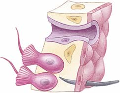
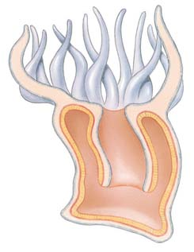
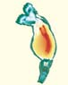
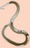
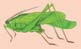

31 Esponjas, cnidarios, ctenóforos y protóstomos
640
CONCEPTOS CLAVE
31.1 Los animales con asimetría, simetría radial o birradial incluyen esponjas, cnidarios (hidras, medusas, anémonas de mar) y ctenóforos (medusas peine). Las esponjas se caracterizan por coanocitos (“células de collar”) y por células débilmente asociadas que no forman tejidos verdaderos; los cnidarios se caracterizan por simetría radial, dos capas de tejido y células que contienen organelos urticantes; y los ctenóforos tienen simetría birradial, dos capas de tejido, ocho hileras de cilios y tentáculos con células adhesivas. 31.2 Los protóstomos son un grupo monofi lético que da lugar a dos clados principales: Lophotrochozoa y Ecdysozoa. Los lofotrocozoos incluyen los anélidos (lombrices de tierra), moluscos y varios grupos más pequeños. 31.3 Los ecdisozoos incluyen los nemátodos (gusanos redondos) y artrópodos (cangrejos herradura, arañas, insectos). El notable éxito biológico de los insectos puede atribuirse a la evolución de planes corporales complejos y ciclos de vida que incluyen su exoesqueleto, segmentación, apéndices articulados especializados, capacidad para volar y metamorfosis.
E
n el capítulo 30 se introdujo el reino animal y se exploró la fi logenia animal. Se examinó cómo los sistemáticos usan fósiles, morfología, patrones de desarrollo y datos moleculares para determinar relaciones animales. En este capítulo comienza una introducción a las esponjas, cnidarios y ctenóforos, grupos caracterizados por asimetría, simetría radial y simetría birradial, respectivamente. La fi logenia de estos animales es el foco de mucha de la investigación actual. Aunque esponjas, cnidarios y ctenóforos son principalmente animales pequeños con estructuras corporales simples, son de gran importancia ecológica. Son importantes miembros de las cadenas alimenticias marinas, pueden proporcionar refugio a otros organismos y algunos forman relaciones simbióticas con otros animales. Los corales que producen arrecifes están entre los animales con más importancia ecológica en el mundo. Después del estudio de esponjas, cnidarios y ctenóforos, comenzará el examen de los animales bilaterales, los animales más conocidos y más numerosos sobre la Tierra. Más del 99% de las especies animales pertenecen a Bilateria. Estas formas diversas están adaptadas para vivir en casi todo hábitat imaginable en el océano y en ambientes de agua dulce y terrestres.
Marty Snyderman/Visuals Unlimited
Un gusano de fuego ( Hermodice carcunculata ). El gusano de fuego es un gusano segmentado (un anélido) que puede crecer hasta 31 cm de largo. Vive en aguas marinas poco profundas: en arrecifes de coral, lechos de césped de tortuga o bajo rocas. Las cerdas del gusano de fuego, que están llenas con veneno, puede desgarrar la piel y causar irritación.
Esponjas, cnidarios, ctenóforos y protóstomos 641
Las esponjas tienen coanocitos y otras células especializadas
Datos moleculares sugieren que los poríferos (fi lo Porifera ) no son un grupo monofi lético. El nombre Porifera , que signifi ca “tener poros”, describe de manera adecuada a las esponjas, cuyos cuerpos están perforados por pequeños orifi cios. Las esponjas son animales acuáticos, principalmente marinos, que son más abundantes en aguas cálidas. Los biólogos han identifi cado alrededor de 15,000 especies de esponjas. Varían en tamaño desde algunos milímetros hasta más de un metro en altura y diámetro (loggerhead esponge). Muchas esponjas son asimétricas, pero varían en forma desde las aplanadas con incrustaciones, hasta bolas, tazas, abanicos o fl oreros. Las esponjas vivas pueden tener brillantes colores (verde, anaranjado, rojo, amarillo, azul o púrpura) o pueden ser blancas o parduscas ( FIGURA 31-1 ). Algunas especies tienen bacterias o algas simbióticas que les brindan color. Aunque son multicelulares y pueden ser grandes, las esponjas funcionan en forma muy parecida a los coanofl agelados, un grupo de protistas unicelulares y coloniales. Recuerde que la evidencia sugiere que los animales (incluidas las esponjas) y los coanofl agelados comparten un ancestro coanofl agelado común. Los coanofl agelados se caracterizan por un solo fl agelo rodeado por un collar de microvellos (vea la fi gura 26-21). Las esponjas tienen células fl ageladas llamadas células de collar , o coanocitos , que son sorprendentemente similares a los coanofl agelados. Las larvas de esponja tienen fl agelos y pueden nadar libremente. Las esponjas adultas se adhieren a algún objeto sólido y desde hace mucho tiempo se les describe como sésiles. Sin embargo, los biólogos han observado adultos de varias especies moverse en forma lenta (aproximadamente 4 mm al día), posiblemente por el movimiento acumulado de células a lo largo de la superfi cie inferior de la esponja. Aunque las esponjas son multicelulares, sus células están débilmente asociadas y no forman tejidos verdaderos. No obstante, existe una división del trabajo entre los varios tipos de células que constituyen la esponja, con ciertas células especializadas en nutrición, sostén, contracción o reproducción. Muchas células de esponja son extremadamente versátiles y pueden cambiar de forma y función. Los coanocitos constituyen la capa interior de ciertas esponjas. Cada célula está equipada con un pequeño collar que rodea la base del fl agelo. El collar es una extensión de la membrana plasmática y consiste en microvellos. Los coanocitos crean la corriente de agua que lleva el alimento y el oxígeno a las células y aleja el dióxido de carbono y otros desechos. Los coanocitos también atrapan y fagocitan partículas de alimento. ¡Los coanocitos de algunas esponjas todos juntos pueden bombear un volumen de agua igual al volumen de la esponja cada minuto! Las esponjas tienen tres tipos de sistemas de canal a través del cual circula agua. En el sistema de canal asconoide simple, el batimiento de los fl agelos de los coanocitos crea una corriente que impulsa agua a través de cientos de pequeños poros . Células tubulares especializadas, llamadas porocitos , forman los poros. Estas células regulan el diámetro de los poros al contraerse. El agua pasa en la cavidad central, o espongocele (no es una cavidad digestiva) y luego fl uye hacia fuera a través del extremo abierto de la esponja, el ósculo . El sistema asconoide se ilustra en la fi gura 31-1. En el sistema siconoide , el agua entra a través de canales recubiertos con coanocitos. La mayoría de los tipos de esponjas tiene un sistema leuconoide . La pared corporal está plegada extensamente y complejos sistemas de canales proporcionan creciente área superfi cial para la captura de alimento. Células epidérmicas forman la capa exterior de la esponja y recubren los canales. Los canales conducen a pequeñas cámaras que están recubiertas con coanocitos.
El gusano de fuego que se muestra en la fotografía es un ejemplo de los diversos animales que se encuentran entre los Bilateria. El notable éxito de los animales bilaterales puede atribuirse a la evolución de adaptaciones que facilitaron la captura de alimento, el escape de los depredadores y la reproducción. Entre sus adaptaciones clave están la cefalización (formación de una cabeza), un sistema nervioso central, músculos, un celoma y compartimentalización del cuerpo. Los animales grandes desarrollaron sistemas corporales para intercambio de gases, eliminación de desechos y transporte interno de nutrientes, gases de respiración, desechos y otros materiales. Recuerde que, con base en el patrón de desarrollo temprano, los animales bilaterales se clasifi can como protóstomos o deuteróstomos. Los protóstomos forman dos clados: Lophotrochozoa y Ecdysozoa. En este capítulo se estudiarán las innovaciones en planes corporales, relaciones fi logenéticas e historias de vida de varios fi los de estos dos clados. Por las razones discutidas en el capítulo 23, algunos sistemáticos ahora evitan el uso de categorías fi jas de la jerarquía de clasifi cación de Linneo (reino, fi lo, clase, orden, familia). Al clasifi car animales, los clados se describen cuando se conocen. Continuará el uso de algunas categorías de Linneo, pero se destacarán los grupos que pueden no ser monofi léticos y se puntualizarán las controversias.
31.1 ESPONJAS, CNIDARIOS Y CTENÓFOROS: ANIMALES CON ASIMETRÍA, SIMETRÍA RADIAL O SIMETRÍA BIRRADIAL
OBJETIVOS DE APRENDIZAJE
1 Identifi car características distintivas de los poríferos. 2 Identifi car características distintivas de cnidarios, describir cuatro grupos y ofrecer ejemplos de animales que pertenezcan a cada grupo. 3 Identifi car características distintivas de los ctenóforos.
Hasta recientemente, los biólogos plantearon la hipótesis de que las esponjas divergieron temprano de otros grupos animales y asignaron las esponjas a un grupo basal, Parazoa ( para , “junto a”; y zoa , “animales”). Basaban sus hipótesis sobre la asimetría y plan corporal simple de las esponjas. Las células de las esponjas están asociadas holgadamente y no forman tejidos verdaderos. Otros animales tienen tejidos verdaderos y se clasifi caron como Eumetazoa ( eu , “verdadero”; meta , “después de”; y zoa , “animales”). En consecuencia, los biólogos dividieron el reino animal en dos clados animales principales: Parazoa y Eumetazoa. Parazoa se consideró un grupo hermano de Eumetazoa; sin embargo, esta visión fue desafi ada. Al menos un grupo de esponjas (esponjas calcáreas) pudieron simplifi carse conforme evolucionaban a partir de animales con planes corporales más complejos. Algunos sistemáticos propusieron que los ctenóforos, en lugar de las esponjas, pudieran ser el grupo más antiguo de animales. Los sistemáticos continúan la búsqueda de nuevas pistas que resolverán las controversias acerca de cuál rama de animales es la más antigua, así como cuáles grupos están más cercanamente emparentados entre ellos.
642 Capítulo 31
la esponja pueden reaccionar a estímulos, las esponjas no tienen células nerviosas especializadas y por ende no pueden reaccionar como un todo. Sin embargo, en ciertas esponjas vítreas se han identifi cado señales eléctricas. El comportamiento parece limitado a necesidades metabólicas básicas como la captura de alimento y la regulación del fl ujo de agua a través del cuerpo. Las esponjas se reproducen tanto asexual como sexualmente. En la reproducción asexual, un pequeño fragmento o yema puede liberarse de la esponja progenitora y dar lugar a una nueva esponja. Dichos fragmentos pueden adherirse a la esponja progenitora, y formar, o ser parte de, una colonia. La mayoría de las esponjas son hermafroditas , lo que signifi ca que el mismo individuo puede producir tanto óvulos como espermatozoides. Algunas de las células ameboideas se desarrollan hasta ser espermatozoides; otras, hasta convertirse en óvulos. Sin embargo, las esponjas hermafroditas por lo general producen óvulos y espermatozoides en diferentes momentos, y realizan fecundación cruzada con otras esponjas. Liberan espermatozoides maduros en el agua, que toman otras esponjas de la misma especie. La fecundación y el desarrollo temprano tienen lugar dentro del mesohílo gelatinoso. Los cigotos crecen hasta ser larvas fl ageladas que
El andamiaje esquelético de una esponja puede ser tanto rígido como fi broso. Entre las capas celulares exterior e interior, el cuerpo de la esponja tiene una capa gelatinosa, el mesohílo , que está sostenida por delgadas púas esqueléticas, o espículas . Células ameboideas , que vagan en torno al mesohílo, segregan las espículas. Las espículas están hechas de carbonato de calcio o de sílice. La parte fi brosa del esqueleto de la esponja consiste en espongina , una forma de colágeno. Las esponjas son alimentadores por suspensión , adaptados para capturar y comer cualquier alimento que esté suspendido en el agua. Conforme el agua circula a través del cuerpo, el alimento es atrapado a lo largo de collares pegajosos de los coanocitos. En consecuencia, los collares fi ltran las partículas de alimento suspendidas en el agua. Los fi ltradores por suspensión se conocen como fi ltradores de alimentos . Las partículas de alimento o se digieren dentro del coanocito o se transfi eren a una célula ameboidea para su digestión. La célula ameboidea transporta nutrientes a las células epidérmicas. El alimento no digerido pasa a través del ósculo y simplemente se elimina en el agua. El intercambio de gases y la excreción de desechos depende de la difusión adentro y afuera de células individuales. Aunque las células de
- Núcleo
Collar
Flagelo
Ósculo
Espongocele
Poros inhalantes
Movimiento del agua
Porocito
Célula epidérmica
Espícula
Célula ameboidea en mesohílo Célula de collar (coanocito)
Microvello
Esponjas
Cnidarios
Ctenóforos
Deuterostomia
Lofotrocozoos
Ecdisozoos
Ancestro coanoflagelado
© Djmattar/Dreamstime
?
FIGURA 31-1 Animada Estructura de esponja (a) Esponjas tubo ( Spinosella plicifera ) del Caribe, adheridas al sustrato de arrecife de coral. (b) Corte de esponja para exponer su organización. Esta esponja tiene un sistema de canales del tipo asconoide.

Esponjas, cnidarios, ctenóforos y protóstomos 643
de las esponjas vivas son demosponjas. En algunas de las demosponjas las espículas están reunidas con espongina. Algunas demosponjas no tienen espículas. Estas esponjas blandas se han usado durante cientos de años como esponjas de baño y para limpieza. Por desgracia, como resultado de la pesca excesiva, las esponjas de baño ahora son escasas. Los datos moleculares indican que las esponjas calcáreas son un clado separado de las esponjas vítreas y las demosponjas. Las esponjas calcáreas pueden ser el taxón hermano de las otras esponjas, o pueden estar más cercanamente emparentadas con los lofotrocozoos que con las esponjas vítreas y las demosponjas.
Los cnidarios tienen células urticantes únicas
Se han descrito aproximadamente 10,000 especies de cnidarios (fi lo Cnidaria ). La mayoría son marinos. El cuerpo cnidario con simetría radial está organizado como un saco hueco con la boca y tentáculos circundantes localizados en un extremo. Algunos cnidarios viven una existencia solitaria, mientras que muchos otros, como los corales, forman colonias. Con base en datos moleculares, algunos sistemáticos proponen que los cnidarios comparten un ancestro común con el clado de los animales bilaterales. Los cnidarios tienen dos formas corporales: pólipo y medusa ( FIGURA 31-2 ). La forma pólipo , representada por la hidra , usualmente tiene una boca dorsal rodeada con tentáculos. En la forma medusa , la
dejan al progenitor junto con la corriente de agua que sale. Después de nadar durante un rato, una larva encuentra un objeto sólido, se adhiere a él y se instala en una vida sésil. Las esponjas tienen una notable capacidad para repararse ellas mismas cuando se lesionan y regenerar las partes perdidas. Cuando las células de una esponja se separan experimentalmente, se reconocen mutuamente y su lugar en el todo y se agregan para reformar una esponja completa. Existen tres grupos principales de esponjas: las esponjas calcáreas tienen espículas compuestas de carbonato de calcio, mientras que las esponjas vítreas y las demosponjas tienen espículas de silicio. Alrededor del 95%
Boca
Epidermis
Mesoglea
Gastrodermis
Cavidad gastrovascular
Boca
Epidermis
Mesoglea
Clase Hydrozoa (pólipo). Este hidrozoo ( Gonothyraea loveni ) forma una colonia de pólipos. El dibujo ilustra un solo pólipo.
Clase Scyphozoa (medusa). La ortiga de mar ( Chrysaora fuscescens ) usa sus tentáculos equipados con cnidocitos para capturar animales pequeños (zooplancton) suspendidos en el agua.
Clase Anthozoa (pólipo). Pólipos de coral ( Montastrea cavernosa ) extendidos para alimentación.
Gastrodermis
Cavidad gastrovascular
Boca Mesoglea
Gastrodermis
Cavidad gastrovascular
Esponjas
Cnidarios
Ctenóforos
Deuterostomia
Lofotrocozoos
Ecdisozoos
Ancestro coanoflagelado
Robert Brons/Biological Photo Service
Brian Parker/Tom Stack & Associates
?
© Johanders/Dreamstime
FIGURA 31-2 Animada Formas corporales pólipo y medusa de cnidarios

644 Capítulo 31
Cuando se estimula por el contacto o ciertos químicos disueltos en el agua, el nematocisto dispara su hilo. Algunos tipos de hilos de nematocisto son pegajosos. Otros son largos y se enrollan alrededor de la presa. Un tercer tipo tiene barbas o espinas que pueden inyectar una toxina proteica que paraliza a las presas, como los crustáceos pequeños. Los cnidarios usan sus tentáculos para capturar presas y llevarlas a la boca. Ésta conduce a la cavidad gastrovascular , donde tiene lugar la digestión. La boca es la única abertura hacia la cavidad gastrovascular y por lo tanto debe servir tanto para ingerir alimento como para expulsar el material no digerido. El intercambio de gases y la excreción ocurren mediante difusión. La pared del cuerpo es sufi cientemente delgada como para que ninguna célula esté lejos de la superfi cie. Mucho más organizados que las esponjas, los cnidarios son diploblásticos; esto es: tienen dos capas de tejido defi nidas. El ectodermo da lugar a la epidermis exterior, una capa protectora que cubre el cuerpo. El endodermo origina la gastrodermis interior, que recubre la cavidad gastrovascular y funciona en la digestión. Estas delgadas capas están separadas por una gruesa mesoglea gelatinosa, que es principalmente acelular. Los cnidarios tienen células nerviosas que forman redes neuronales que conectan células sensoriales en la pared del cuerpo con células contráctiles y células glandulares. Un impulso establecido por una célula sensorial se transmite en todas direcciones de manera más o menos equitativa. Las células nerviosas no están organizadas para formar un cerebro o cordón nervioso. En algunos tipos de medusas, órganos sensoriales se colocan alrededor del borde del cuerpo. Los órganos sensoriales incluyen “ojos” simples, llamados manchas oculares, órganos de equilibrio (estatocitos) y quimiorreceptores (células que perciben ciertos químicos). Tanto la epidermis como la gastrodermis tienen células especializadas para contraerse (sin embargo, no son verdaderas células musculares). Las fi bras contráctiles en las células epidérmicas están ordenadas en sentido de la longitud, y las que se encuentran en la gastrodermis se ordenan en un patrón circular. Estos dos conjuntos de células contráctiles actúan sobre la cavidad gastrovascular llena con agua, y forman un esqueleto hidrostático . Este esqueleto da soporte al cuerpo y permite el movimiento. Al contraer un conjunto de células contráctiles o el otro, la hidra puede acortar, alargar o doblar su cuerpo (vea la fi gura 40-2). Se consideran cuatro grupos de cnidarios: hidrozoos, escifozoos, cubozoos y antozoos ( TABLA 31-1 ).
boca se ubica en la superfi cie cóncava inferior, u oral ; la superfi cie superior convexa es la superfi cie aboral . Algunos cnidarios tienen la forma de pólipo durante una etapa de su ciclo de vida y la forma de medusa durante otra etapa. La carabela portuguesa y algunos otros cnidarios consisten en colonias de muchos individuos, algunos de los cuales son pólipos y otros medusas. Los cnidarios obtienen su nombre por células especializadas, llamadas cnidocitos (de las palabras griegas que signifi can “células ortiga”), que contienen organelos urticantes. Los cnidocitos se ubican principalmente en la epidermis, en especial sobre los tentáculos. Los cnidocitos contienen “cápsulas hilo” urticantes llamadas nematocistos ( FIGURA
31-3 ). Cada cnidocito tiene un pequeño disparador sobresaliente ( cnidocilo ) en su superfi cie exterior, y un hilo hueco enrollado en su interior. El cnidocito se puede comparar con una arma cargada, lista para disparar.
250 μ m
- MO de nematocistos en descarga de un carabela portuguesa ( Physalia physalis ). Fotografiada en el Golfo de México.
Robert and Linda Mitchell
Núcleo
Hilo
Cápsula
Nematocisto (no descargado) Cnidocilo (disparador)
Cnidocito
Hilo
Nematocisto (descargado)
- Nematocistos sin descargar y descargado. El cnidocilo, o disparador, es un mecanorreceptor que descarga el nematocisto cuando percibe contacto con un objeto.
FIGURA 31-3 Animada Nematocistos Cuando se estimulan las células urticantes cnidarias (cnidocitos), el nematocisto descarga y expulsa un hilo que puede enredarse o penetrar la presa. Algunos nematocistos segregan una sustancia tóxica que inmoviliza a la presa.
Principales clases del fi lo Cnidaria
Clases y animales representativos Características
Hydrozoa Principalmente marinos, pero algunas especies Hydra, Obelia, de agua dulce; alternancia de etapas pólipo y carabela medusa en la mayoría de las especies (forma portuguesa pólipo sólo en Hydra ); algunas forman colonias.
Scyphozoa Principalmente marinos; usualmente habitan Medusa aguas costeras, es más prominente la forma de medusa de nado libre; etapa pólipo con frecuencia reducida.
Cubozoa Habitan aguas tropicales y subtropicales; tienen “Medusa cubo” etapa pólipo, pero la forma medusa es más prominente; forma cuadrada cuando se ven desde arriba; cazan de manera activa; ojos complejos que forman imágenes borrosas.
Anthozoa Marinos; pólipos solitarios o coloniales; en la Anémonas marinas, mayoría no hay etapa medusa; cavidad gastrocorales, gorgonias vascular dividida mediante particiones en cámaras, lo que aumenta el área para digestión.
TABLA 31-1
Esponjas, cnidarios, ctenóforos y protóstomos 645
drozoos, y tienen una gruesa mesoglea viscosa que brinda fi rmeza al cuerpo. En los escifozoos la etapa de pólipo es pequeña y poco notoria, o incluso puede estar ausente. La medusa más grande, Cyanea , puede medir más de 2 m de diámetro y tener tentáculos de 30 m de largo. Estos “monstruos” anaranjado y azul, entre los invertebrados más grandes, puede causar dolorosas picaduras a los nadadores de los océanos Atlántico norte y Pacífi co.
Los cubozoos incluyen la “medusa cubo”
Cuando se ven desde arriba, los cubozoos tienen forma cuadrada. Tienen cuatro tentáculos, o grupos de tentáculos. Estas medusas de nado rápido tienen ojos complejos que forman imágenes borrosas, y cazan activamente. La avispa de mar ( Chironex fl eckeri ), que habita en aguas de la costa australiana norte, tiene largos tentáculos que pueden extenderse más de 3 m. La avispa de mar produce uno de los venenos más mortales del reino animal. Su veneno contiene toxinas que pueden aturdir o matar peces y otras pre-
La mayoría de los hidrozoos forman colonias
Los hidrozoos incluyen hidras e hidroides , como Obelia y la carabela portuguesa. Aunque en realidad no es típica, la hidra solitaria es el cnidario que con más frecuencia estudian quienes se inician en la biología ( FIGURA
31-4 ). A simple vista, la hidra parece un poco como una cuerda deshilachada. Este pequeño hidrozoo se encuentra en estanques de agua dulce. Puesto que tiene una notable capacidad para regenerarse, los biólogos la llamaron Hydra en honor del monstruo de muchas cabezas de la mitología griega que podía producir dos cabezas nuevas por cada cabeza que le cortaban. Cuando la hidra se corta en varios pedazos, cada trozo puede regenerar todas sus partes faltantes y convertirse en un animal completo. Los Hydra viven en agua dulce y por lo general se adhieren a una roca, planta acuática o detritus mediante un disco de células en su base. Las hidras se reproducen asexualmente por gemación durante períodos cuando las condiciones ambientales son óptimas. Sin embargo, se diferencian como machos y hembras y se reproducen sexualmente en el otoño o cuando el agua donde viven se estanca. El cigoto puede quedar cubierto con una concha que lo protege durante el invierno o hasta que las condiciones se vuelven más favorables. Muchos hidrozoos forman colonias que consisten en cientos o miles de individuos. Una colonia comienza con un solo pólipo que se reproduce asexualmente por gemación. Sin embargo, en lugar de separarse del progenitor, la yema permanece adherida y a la larga forma yemas adicionales. En la misma colonia pueden surgir muchos tipos de individuos, algunos especializados para alimentar, algunos para reproducción y otros para defensa. Algunos hidrozoos marinos son notables por su alternancia de etapas de pólipo sésil y medusa mótil. El ciclo de vida del hidrozoo marino colonial Obelia ilustra la alternancia de las etapas pólipo y medusa ( FIGURA 31-5 ). En Obelia , los pólipos se reproducen asexualmente por gemación, mientras que las medusas se reproducen sexualmente. Tanto el pólipo como la medusa son diploides; sólo espermatozoides y óvulos son haploides.
Los escifozoos son las medusas “verdaderas”
En los escifozoos , la medusa es la forma corporal dominante. Las medusas Jellyfi sh por lo general son más grandes que las medusas hi-
Tentáculos
Cnidocitos (células urticantes)
Boca
Óvulo
Ovario Cavidad gastrovascular
Epidermis
Mesoglea
Gastrodermis
Hydra viridis con gran yema. Cuando la yema se separa de su progenitor, se convierte en un individuo independiente.
Sección transversal a través del cuerpo de Hydra .
17 mm
- Corte longitudinal de Hydra que muestra su estructura interna. A la izquierda se representa la reproducción asexual mediante gemación; la reproducción sexual se representa por el ovario a la derecha. Las hidras macho desarrollan testículos que producen espermatozoides.
Yema
Biophoto Associates/Photo Researchers, Inc.
FIGURA 31-4 Hidra, un hidrozoo de agua dulce
646 Capítulo 31
sas. Estas toxinas también pueden causar fallo respiratorio y ataques cardiacos en los humanos. Los decesos se asocian principalmente con varias picaduras causadas por contacto con los tentáculos sobre un área grande del cuerpo. De manera interesante, las tortugas marinas se alimentan de medusas cubo, y aparentemente no son afectadas por su veneno.
Los antozoos son pólipos
Los antozoos , que incluyen anémonas marinas y corales, son pólipos, individuos o colonias. No tienen una etapa de medusa de nado libre. El pólipo produce óvulos y espermatozoides, y el óvulo fecundado se desarrolla en una pequeña larva ciliada llamada plánula . Esta forma larvaria puede nadar hasta una nueva ubicación antes de adherirse para desarrollarse y convertirse en pólipo. Los antozoos difi eren de los hidrozoos en que una serie de particiones verticales dividen parcialmente la cavidad gastrovascular en cámaras conectadas. Las particiones aumentan el área superfi cial para digestión, lo que permite a las anémonas digerir un animal tan grande como un cangrejo. Aunque los corales pueden capturar presas, la nutrición de muchas especies tropicales depende de algas fotosintéticas ( zooxantelas ) que viven dentro de las células que recubren la cavidad digestiva del coral (vea el capítulo 26 y la fi gura 54-12). La relación entre el coral y las zooxantelas es simbiótica y mutuamente benéfi ca. Las algas brindan al coral oxígeno y compuestos de carbono y nitrógeno. A cambio, el coral proporciona a las algas productos de desecho como amoniaco, del cual las algas elaboran compuestos nitrogenados para ambos participantes. En mares cálidos poco profundos, gran parte del fondo está cubierto con coral o anémonas, cuya mayoría tiene brillantes colores. Los arrecifes de coral consisten en colonias de millones de corales y de ciertas algas (principalmente algas rojas coralinas). Las colonias vivas sólo ocurren en las regiones superiores de dichos arrecifes, y agregan sus
Pólipo reproductor
Pólipo de alimentación
250 μ m
- MO de Obelia . Algunos pólipos tienen tentáculos y están especializados para alimentación, mientras otros están especializados para reproducción.
David M. Phillips/Visuals Unlimited
- Ciclo de vida de Obelia .
Óvulo Espermatozoide
Medusas Boca
Tentáculo
Yema medusa
Pólipo reproductor
Larva plánula
Colonia de pólipo joven
Colonia de pólipos
Cavidad gastrovascular
Pólipo de alimentación
Pólipos reproductores producen medusas mediante gemación asexual.
Medusas de nado libre se reproducen sexualmente.
La larva se desarrolla hasta ser un pólipo que forma nueva colonia.
1
2
3 El cigoto se desarrolla hasta convertirse en una larva plánula ciliada.
4
5 La colonia crece conforme nuevos pólipos producen yemas y permanecen adheridos.
FIGURA 31-5 Animada Obelia, un hidrozoo colonial marino
Esponjas, cnidarios, ctenóforos y protóstomos 647
Debido a sus semejanzas, los biólogos clasifi can los ctenóforos cerca de los cnidarios. Sin embargo, su desarrollo es diferente y su cavidad digestiva tiene aberturas en ambos extremos. Las semejanzas entre ctenóforos y cnidarios puede ser resultado de evolución convergente a partir de vivir en un ambiente similar: el océano. Entonces: ¿dónde se colocan los ctenóforos en el cladograma? Conforme los sistemáticos recopilan nuevos datos, su posición en el árbol animal se volverá más clara.
propios esqueletos a la roca en formación. Los arrecifes de coral están entre los más productivos de todos los ecosistemas y rivalizan con las pluviselvas en diversidad de especies (vea la fi gura 56-21). Un solo arrecife puede servir como hogar para más de 3000 especies de peces y otros organismos marinos, y un estimado de un cuarto de todas las especies marinas depende de los arrecifes de coral. Un estudio de 2008 de 704 especies de corales constructores de arrecifes reportó que alrededor de un tercio estaban amenazados o casi amenazados, y podían estar en riesgo creciente de extinción. Las actividades humanas son responsables de gran parte de este daño. Los factores contribuyentes incluyen pesca excesiva, minado de arrecifes para materiales de construcción, contaminación de aguas costeras con químicos industriales, y sofocamiento del coral con el sedimento arrastrado corriente abajo de los bosques talados. La acidifi cación de la costa causada por el aumento en dióxido de carbono en la atmósfera es otro factor importante. El blanqueamiento del coral es la pérdida, inducida por estrés, de la colorida alga simbiótica que habita las células de coral ( FIGURA
31-6 ). Cuando está bajo estrés ambiental, en realidad el coral expulsa al alga. Sin sus algas, el coral está mal nutrido y muere. Los factores ambientales que se sospecha contribuyen al blanqueamiento del coral incluyen temperaturas inusualmente bajas o altas (asociadas con el calentamiento global), contaminación, cambios en salinidad, acidifi cación y enfermedades.
Las medusas peine tienen células adhesivas que atrapan presas
Las frágiles medusas peine luminiscentes son animales marinos conocidos como ctenóforos . Se asignan al fi lo Ctenophora . Se han descrito aproximadamente 150 especies de ctenóforos. Algunas son tan pequeñas como un guisante; otras son más grandes que un tomate. La superfi cie exterior de un ctenóforo tiene ocho hileras de cilios que parecen peines ( FIGURA 31-7 ). Los ctenóforos tienen simetría birradial, lo que signifi ca que podrían obtenerse mitades iguales al cortar a través del eje corporal en dos formas diferentes. El plan corporal de los ctenóforos es un poco similar al de una medusa cnidaria en cuanto a que los ctenóforos tienen un tipo de simetría radial, tentáculos de alimentación y dos capas celulares separadas por una gruesa mesoglea gelatinosa. Algunos ctenóforos tienen dos tentáculos. Sus tentáculos están equipados con células adhesivas. Cuando las presas entran en contacto con el tentáculo, las células pegajosas se abren y liberan hilos pegajosos que atrapan a las presas. Los ctenóforos no tienen los característicos nematocistos urticantes de los cnidarios. Además, a diferencia de los cnidarios, el sistema digestivo ctenóforo tiene una boca para ingerir alimentos en un extremo y dos poros anales para la expulsión de agua y desechos en el otro extremo. Los ctenóforos tienen un sistema nervioso que incluye una red de células nerviosas y un órgano sensorial llamado “estatocisto”, que coordina el batimiento de los cilios en los peines. El batimiento coordinado de los cilios mueve el animal a través del agua. El estatocisto también funciona en el equilibrio y ayuda al animal a orientarse.
Esponjas
Cnidarios
Ctenóforos
Deuterostomia
Lofotrocozoos
Ecdisozoos
Ancestro coanoflagelado
David Wrobel/Biological Photo Service
?
FIGURA 31-7 Ctenóforo (medusa peine) Los ctenóforos son hermafroditas bioluminiscentes de nado libre capaces de autofecundación. La grosella de mar ( Pleurobrachia ) tiene dos largos tentáculos con células adhesivas usadas para capturar presas.
FIGURA 31-6 Coral cuerno de alce blanqueado Este coral cuerno de alce ( Acropora ) se fotografi ó en la isla Heron, en la Gran Barrera de Coral de la costa de Australia.
Foto de Ove Hoegh-Guldberg/Centre for Marine Studies, University of Queensland
648 Capítulo 31
Los animales que se mueven por lo general tienen un cuerpo alargado con extremos anterior y posterior defi nidos. Presentan cefalización , la evolución de una cabeza con una concentración de órganos sensoriales en el extremo anterior. Un cerebro simple y órganos sensoriales pareados se concentran en la región “de la cabeza”. Un animal con un extremo frontal usualmente se mueve hacia adelante. Con una concentración de órganos sensoriales en la parte del cuerpo que primero encuentra su ambiente, el animal puede buscar de manera activa alimento, refugio y parejas, o detectar enemigos con rapidez.
Los gusanos planos son acelomados bilaterales
Los gusanos planos ( platelmintos , fi lo Platyhelminthes ) son animales con cuerpo blando que dejan pocos fósiles para ofrecer pistas acerca de su historia evolutiva. Sus cuerpos planos y alargados son sólidos; esto es: son acelomados (no tienen cavidad corporal). Históricamente, los biólogos consideraron a los platelmintos como los animales triploblásticos con simetría bilateral más simples. Sin embargo, datos moleculares, específi camente secuencias de ARN ribosómico 18S, indican que el fi lo Platyhelminthes, como tradicionalmente se clasifi caba, no es un grupo monofi lético. Con base en datos moleculares, los sistemáticos reclasifi caron dos órdenes (de la clase Turbellaria) que difi eren signifi cativamente de otros platelmintos. Estos dos órdenes se asignaron a su propio fi lo (Acoelomorpha). Este nuevo grupo puede relacionarse cercanamente con el ancestro común que vinculó los animales con simetría radial y los animales bilaterales. Los platelmintos restantes parecen más cercanamente relacionados con los celomados. Si es así, los platelmintos evolucionaron a partir de animales más complejos. Originalmente tenían una cavidad corporal, pero su plan corporal se simplifi có más tarde en su historia evolutiva. Muchos biólogos en la actualidad clasifi can a estos platelmintos como lofotrocozoos. La fi logenia de los platelmintos sigue siendo controvertida. Conforme los biólogos consideren nuevos datos, probablemente cambiarán su valoración de las relaciones fi logenéticas de los platelmintos. Algunos biólogos asignan las 20,000 especies de Platyhelminthes a cuatro clases. La clase Turbellaria consiste en los platelmintos de vida libre, incluidas planarias y sus parientes. Las clases Trematoda y Monogenea incluyen las duelas, que son parásitos o internos o externos. La clase Cestoda incluye las tenias, que como adultos son parásitos intestinales de los vertebrados ( TABLA 31-2 ).
Repaso
■ ¿Por qué son importantes los coanocitos? ¿Cuál es su función en las esponjas?
■ ¿En qué forma se especializan las células de las esponjas?
■ ¿En qué forma los cnidarios difi eren de las esponjas?
■ Bosqueje los principales eventos en el ciclo de vida de Obelia .
■ ¿En qué se parece un ctenóforo a un cnidario? ¿En qué forma son diferentes?
31.2 LOS LOPHOTROCHOZOA
OBJETIVOS DE APRENDIZAJE
4 Resumir lo que se conoce acerca de la fi logenia de los lofotrocozoos y citar las ventajas adaptativas de tener un celoma y de la cefalización. 5 Identifi car características distintivas de los platelmintos y nemertinos; describir los principales grupos de platelmintos y ofrecer ejemplos de animales que pertenezcan a cada clase. 6 Describir las características distintivas de los moluscos y de los cuatro grupos principales de moluscos discutidos, y ofrecer ejemplos de cada grupo. 7 Describir las características distintivas de los anélidos y de los tres grupos principales de anélidos discutidos, y ofrecer ejemplos de cada grupo. 8 Describir las características distintivas de los lofoforados y de los rotíferos.
El estudio de los animales bilaterales comienza con los Lophotrochozoa , un clado que incluye los gusanos planos (platelmintos), rotíferos (animales rueda), nemertinos (gusanos cinta), moluscos, anélidos (lombrices de tierra) y el fi lo lofoforado (vea la fi gura 30-7). Recuerde del capítulo 30 que el nombre Lophotrochozoa proviene de dos importantes características de algunos animales en este clado: (1) el lofóforo , un anillo ciliado de tentáculos que rodea la boca en tres pequeños grupos de animales; y (2) la larva trocófora , un tipo de larva que caracteriza a dos grandes grupos: los moluscos y los anélidos. Algunos sistemáticos argumentan que los gusanos planos y los rotíferos deberían asignarse a un grupo separado, los platyzoos . Aquí se les incluiría con los lofotrocozoos. La mayoría de los lofotrocozoos tienen simetría bilateral , al menos en sus etapas larvarias. Son triploblásticos ; esto es: tienen tres capas de tejido defi nidas. Además de la epidermis exterior derivada del ectodermo, y una endodermis interna derivada del endodermo, los lofotrocozoos tienen una capa de tejido media que se desarrolla a partir del mesodermo. La mayoría de los lofotrocozoos tienen un celoma verdadero y un plan corporal de tubo dentro de tubo (vea el capítulo 30). La mayoría de los animales celomados tienen sistemas circulatorio, excretorio y nervioso bien desarrollados. Muchos órganos internos están suspendidos dentro de pliegues del tejido que recubre el celoma y pueden moverse independientemente de la pared corporal exterior. Además, el celoma brinda espacio para que se desarrollen las gónadas. Durante la época de apareamiento de muchos animales, como las aves, las gónadas se agrandan dentro del celoma conforme se llenan con gametos maduros. En algunos animales, el fl uido dentro del celoma ayuda a transportar materiales como alimento, oxígeno y desechos. Las células bañadas por el fl uido celómico pueden intercambiar materiales con él. Las células reciben nutrientes y oxígeno del fl uido celómico y excretan desechos en él. Algunos celomados tienen estructuras excretoras que remueven los desechos directamente del fl uido celómico.
Clases del fi lo Platyhelminthes
Clase y animales representativos Características
Turbellaria* Principalmente de vida libre; sobre todo marinos; Planarias cuerpo cubierto con epidermis ciliada; por lo común carnívoros; depredan pequeños invertebrados
Trematoda y Parásitos con un amplio rango de huéspedes verteMonogenea brados e invertebrados; pueden requerir huéspedes Duelas intermedios; los adultos tienen una ventosa para adherirse al huésped
Cestoda Parásitos de vertebrados; ciclo de vida complejo Tenias por lo general con uno o dos huéspedes intermedios; huésped larvario puede ser invertebrado; usualmente tienen ventosas y en ocasiones ganchos para adherirse al huésped; óvulos producidos dentro de proglotides, que se desprenden; no tienen sistemas digestivo o nervioso
*Los sistemáticos ven a Turbellaria como un grupo parafi lético y casi seguramente se dividirá en al menos tres grupos.
TABLA 31-2
Esponjas, cnidarios, ctenóforos y protóstomos 649
Los platelmintos parásitos, duelas y tenias, están enormemente adaptadas a y modifi cadas por su estilo de vida parasitario. Tienen ventosas o ganchos para sostenerse de sus huéspedes. Los cuerpos de los que viven en sistemas digestivos resisten las enzimas digestivas segregadas por sus huéspedes. Muchos tienen ciclos de vida complicados y producen gran cantidad de huevos. Otras adaptaciones incluyen la pérdida de ciertas estructuras como los órganos sensoriales. Las tenias también perdieron el sistema digestivo.
Los turbelarios son platelmintos de vida libre
La mayor parte de los miembros de la clase Turbellaria son platelmintos marinos de vida libre. Sin embargo, muchos habitan hábitats de agua dulce y algunos son terrestres. Los platelmintos turbelarios usualmente tienen una faringe muscular que ingiere alimento; un cerebro simple, manchas oculares y otros órganos sensoriales en la cabeza; protonefridios , estructuras que funcionan en osmorregulación (equilibrio de fl uidos) y disposición de desechos metabólicos (excreción); y órganos reproductores. Las planarias son platelmintos turbelarios que se encuentran en estanques y torrentes calmos a lo largo del mundo. La planaria estadounidense común Dugesia mide aproximadamente 15 mm de largo, con lo que parecen ser “ojos” cruzados y “orejas” que ondean llamadas aurículas ( FIGURA 31-8 ). En realidad las aurículas sirven como órganos de quimiorrecepción, importantes para localizar alimento. Las planarias son capaces de aprender. La memoria no se localiza dentro de los ganglios, sino que parece retenerse a lo largo del sistema nervioso. Las planarias son carnívoras; atrapan pequeños animales en una secreción mucosa. El sistema digestivo consiste en una sola abertura (la boca); una faringe muscular con forma de tubo (la primera porción del tubo digestivo); y una cavidad gastrovascular ramifi cada. Una planaria proyecta su faringe hacia afuera a través de su boca, y la usa para succionar a su presa. La larga cavidad gastrovascular enormemente ramifi cada
Los platelmintos usualmente tienen un sistema nervioso simple. El cerebro consiste en dos masas de tejido nervioso, llamados ganglios , en la región cefálica. En muchas especies los ganglios se conectan a dos cordones nerviosos que se extienden a lo largo del cuerpo. Este sistema nervioso en ocasiones se le refi ere como “sistema nervioso tipo escalera”, porque una serie de nervios conectan los cordones como los peldaños de una escalera (vea la fi gura 42-2). Los órganos sensoriales incluyen “ojos” simples”, llamados manchas oculares, y órganos de equilibrio (estatocistos). Los platelmintos no tienen órganos para la circulación o intercambio de gases. Estas funciones dependen principalmente de la difusión a través de la pared corporal. Las actividades de algunos órganos están coordinadas y forman sistemas orgánicos simples, por ejemplo, los sistemas digestivo y nervioso. Como en los cnidarios, el sistema digestivo es una cavidad gastrovascular con sólo una abertura, una boca. La cavidad gastrovascular con frecuencia está ampliamente ramifi cada.
Capa muscular interna de la faringe
Capa muscular exterior de la faringe
Epidermis
Glándula adhesiva
Pared corporal compuesta de epidermis, músculo circular y músculo longitudinal (a) Estructura interna. (b) MO de una planaria viva ( Dugesia dorotocephala ). Observe las prominentes aurículas, usadas para localizar alimento.
- Sección transversal a través de una planaria.
Cilios
Capas musculares
Cordones nerviosos ventrales
Masa espermática
Cavidad faríngea
Ganglios Aurícula Mancha ocular Nervio
Faringe
Boca
Aurícula
Vaina que rodea la faringe
Cavidad gastrovascular
1 mm
Músculo
Cavidad de vaina faríngea
T. E. Adams/Peter Arnold, Inc.
Esponjas
Ctenóforos
Cnidarios
Deuterostomia
Ecdisozoos
Lophotrochozoa
Platelmintos
Lofoforados
Rotíferos
Anélidos
Moluscos
Nemertinos
Ancestro coanoflagelado
FIGURA 31-8 Animada La planaria común, Dugesia
650 Capítulo 31
duelas también tienen órganos reproductores extremadamente prolífi cos. Las duelas que son parásitos humanos incluyen las duelas sanguíneas, muy difundidas en las áreas tropicales del mundo, y las duelas del hígado, comunes en Asia, particularmente en áreas donde los humanos usan sus propias heces para fertilizar cultivos. Las duelas sanguíneas del género Schistosoma infectan alrededor de 200 millones de personas que viven en áreas tropicales. Tanto las duelas sanguíneas como del hígado pasan a través de complicados ciclos de vida que involucran varias formas diferentes. Existe una alternancia de etapas sexuales y asexuales, y el parasitismo de uno o más huéspedes intermedios, como caracoles y peces ( FIGURA 31-9 ). Los caracoles acuáticos que sirven como huéspedes intermedios proliferan en estanques, sembradíos de arroz y las áreas pantanosas que se desarrollan cuando se construyen diques.
Las tenias habitan el intestino de vertebrados
Los miembros adultos de más de 5000 especies de la clase Cestoda viven como parásitos en el intestino de probablemente todo tipo de vertebrados, incluidos los humanos. Las tenias son largos animales planos con forma de cinta sorprendentemente especializados para su modo parasitario de vida. Entre sus muchas adaptaciones están ventosas y en ocasiones ganchos
distribuye el alimento a todas partes del cuerpo, de modo que cada célula pueda recibir nutrientes por difusión. Aunque la excreción tiene lugar principalmente por difusión, algunos desechos metabólicos se excretan por los protonefridios. Los protonefridios son túbulos ciegos que terminan en células fl amígeras , células recolectoras equipadas con cilios. El batimiento de los cilios canaliza los desechos a través del sistema de túbulos y a la larga fuera del cuerpo a través de poros excretores. En el capítulo 48 (vea la fi gura 48-2) se estudian un poco más la osmorregulación y los protonefridios. Las planarias se reproducen tanto asexual como sexualmente. En la reproducción asexual, un individuo se constriñe en la parte media y se divide en dos planarias. Cada una regenera sus partes faltantes. Sexualmente, estos animales son hermafroditas . Durante los meses cálidos del año, cada uno está equipado con un conjunto completo de órganos masculinos y femeninos. Dos planarias se aproximan para copular e intercambian espermatozoides de modo que sus óvulos tengan fecundación cruzada.
Las duelas parasitan otros animales
Aunque su plan corporal recuerda al de los platelmintos de vida libre, las duelas , miembros de las clases Trematoda y Monogenea, tienen estructuras, como ganchos y ventosas, para adherirse a sus huéspedes. Las
Las larvas excavan a través de la piel.
1 mm
Las larvas llegan al sistema circulatorio, donde maduran. Durante la reproducción, que tiene lugar en las venas, el macho sostiene a la hembra en un largo surco (como se muestra).
Los huevos pasan hacia el intestino.
Huevos que contienen embriones en desarrollo se excretan con las heces.
Si llegan a agua dulce, los huevos eclosionan y liberan larvas de nado libre (miracidios).
Las larvas deben entrar a un segundo huésped, un caracol de agua dulce. Después de excavar hacia los tejidos del caracol, las larvas se desarrollan en una forma que se reproduce asexualmente. Este proceso aumenta enormemente el número de larvas.
Por último, se desarrollan larvas con cola de tenedor (cercarias) y dejan al caracol.
1
7
6 5
4
3
2
Cortesía de CDC
FIGURA 31-9 Animada Ciclo de vida de la duela sanguínea ( Schistosoma ) La MO muestra un macho adulto envolviendo una hembra más pequeña.

Esponjas, cnidarios, ctenóforos y protóstomos 651
también carece de órganos sensoriales bien desarrollados. Algunas tenias tienen complejos ciclos de vida, y pasan su etapa larvaria dentro del cuerpo de un huésped intermedio y su vida adulta dentro del cuerpo de un huésped fi nal diferente. La FIGURA 31-11 ilustra el ciclo de vida de la tenia bovina, que puede infectar humanos cuando éstos ingieren carne mal cocinada que contenga las larvas.
Los nemertinos se caracterizan por sus probóscides
Los nemertinos (fi lo Nemertea ) incluyen los gusanos cinta, un grupo relativamente pequeño de aproximadamente 1200 especies de animales de vida libre ( FIGURA 31-12 ). La mayoría excavan en sedimentos marinos, pero algunas especies habitan aguas del mar profundo, agua dulce o suelo húmedo. Muchos nemertinos son carnívoros y se alimentan de crustáceos y anélidos. Los nemertinos tienen largos cuerpos estrechos, ya sea cilíndricos o aplanados, que varían en longitud de 1 mm a más de 30 m. Algunos son de un anaranjado vivo, rojo o verde, con franjas negras o coloridas. Su órgano más notable, la probóscide , es un largo tubo muscular hueco que puede evertir (voltear de adentro hacia afuera) rápidamente desde el extremo anterior del cuerpo. Las probóscides pegajosas, utilizadas para capturar presas, pueden enrollarse en torno a animales pequeños. En algunas especies la probóscide es afi lada, y en varias especies segrega fl uido tóxico que inmoviliza a la presa. La probóscide es un carácter derivado que distingue a los nemertinos de todos los otros grupos de invertebrados. Debido a esta característica, en ocasiones a estos animales se les llama gusanos probóscidos . Históricamente, los nemertinos fueron de especial interés evolutivo porque los biólogos pensaban que fueron los primeros animales en tener un sistema circulatorio y un sistema digestivo completo. Los nemertinos no tienen corazón; la sangre circula por contracciones de vasos sanguíneos musculares y mediante movimientos del cuerpo.
sobre la “cabeza”, o escólex , que permiten al parásito adherirse al intestino del huésped ( FIGURA 31-10 ). Las adaptaciones y habilidades reproductivas de las tenias son extraordinarias. El cuerpo de la tenia consiste en una larga cadena de segmentos llamados proglótides . Cada proglótide es una completa máquina re productora equipada con órganos reproductores masculino y femenino. Un solo proglótide contiene hasta 100,000 huevos. Puesto que una tenia adulta puede tener hasta 2000 segmentos, su potencial reproductivo es sorprendente. ¡Una sola tenia puede producir 600 millones de huevos al año! Los proglótides más alejados de la cabeza de la tenia contienen los huevos más maduros; dichos segmentos se desprenden del cuerpo del huésped junto con las heces. La tenia no tiene boca o sistema digestivo. El alimento digerido del huésped se absorbe a través de la pared corporal del gusano. La tenia
250 μ m
© SPL/Photo Researchers, Inc.
FIGURA 31-10 Escólex de tenia La tenia Acanthrocirrus retrisrostris alcanza la madurez en el intestino de las aves zancudas que se alimentan de percebes. La MEB de falso color muestra el grupo de ganchos con forma de pistón que puede retraerse hacia la cabeza o lanzarse y enterrarse en el tejido del huésped. Puede ver dos de las cuatro poderosas ventosas bajo los ganchos.
El ganado ingiere cigotos con el césped. Las larvas eclosionan y enquistan en el músculo de la vaca o el novillo.
Vista amplificada de músculo que contiene larvas enquistadas.
Cuando el humano come carne infectada mal cocinada, los jugos digestivos disuelven el quiste, lo que libera la larva.
Después de adherirse al recubrimiento del intestino delgado humano, la larva madura en tenia adulta. Dentro de proglótides se producen cigotos.
Proglótides maduros dejan el cuerpo con las heces y revientan, lo que libera los cigotos.
Vista amplificada de cigotos en el césped.
Cigotos
Larvas enquistadas
1
2
3
4
5
6
FIGURA 31-11 Animada Ciclo de vida de la tenia bovina, Taenia saginata
652 Capítulo 31
lución del celoma, pero antes del origen del cuerpo segmentado que es característico de los anélidos. A pesar de que los moluscos varían ampliamente en apariencia exterior, la mayoría comparten seis características básicas:
- Un cuerpo blando, por lo general cubierto con una concha dorsal compuesta principalmente de carbonato de calcio. 2. Un ancho pie muscular plano, ubicado ventralmente, que se usa para locomoción. 3. Los órganos corporales (vísceras) se concentran como una masa visceral ubicada arriba del pie. 4. La pared corporal dorsal forma un par de pliegues llamados manto . El manto es una delgada hoja de tejido que usualmente cuelga sobre la masa visceral y forma una cavidad en el manto. El manto puede contener glándulas que segregan una concha. La cavidad del manto contiene branquias o un pulmón. 5. Una estructura con forma de rallador llamada rádula , que es un cinturón de dientes en la región de la boca. (La rádula no está presente en las almejas o sus parientes, que son alimentadores por fi ltración). 6. Un celoma, usualmente reducido a pequeños compartimientos alrededor de ciertos órganos, incluidos el corazón y los órganos excretores ( metanefr idios ). La cavidad corporal principal usualmente es un hemocele , un espacio que contiene sangre (vea la siguiente discusión acerca de los sistemas circulatorios abiertos). El hemocele no es un celoma.
La cámara que rodea la probóscide es un espacio celómico, conocido como rincocele . Se desarrolla en el embrión como lo hace el celoma en los protóstomos celomados (vea el capítulo 30). Sin embargo, difi ere en posición y en función del celoma de otros animales. Los biólogos ahora ven el rincocele como un remanente del celoma de un ancestro celomado. Debido a su presencia y reciente evidencia molecular, los biólogos ahora clasifi can los nemertinos con los lofotrocozoos. Como los platelmintos, los nemertinos evolucionaron a partir de animales celomados y se volvieron más simples con el tiempo.
Los moluscos tienen un pie muscular, masa visceral y manto
Los moluscos (fi lo Mollusca ) incluyen almejas, ostras, caracoles, babosas, octópodos y el más grande de todos los invertebrados, el calamar gigante, que promedia de 9 a 16 m de longitud, incluidos sus tentáculos. Se han descrito más de 80,000 especies vivientes y 35,000 especies fósiles (segundo en número sólo después de los artrópodos). Aquí se estudian cuatro de las ocho clases reconocidas. En la FIGURA 31-13 se ilustran representantes de estas clases y se les describe en la TABLA 31-3 . Aunque la mayoría de los moluscos son marinos, muchos caracoles y almejas viven en agua dulce, y algunas especies de caracoles y babosas habitan la tierra. Probablemente los moluscos evolucionaron temprano en la historia del clado protóstomo, poco después de la evo-
- Gusano cinta ( Lineus ) de la costa Pacífico de Panamá.
Boca
Ganglio cerebral
Probóscide extendida
Músculo retractor
Tubo digestivo
Rincocele
Ano
- Vista lateral de un nemertino típico. Observe el tubo digestivo completo que se extiende desde la boca hasta el ano, lo que le da a este animal un plan corporal de “tubo dentro de tubo”.
Kjell B. Sandved
Esponjas
Ctenóforos
Cnidarios
Deuterostomia
Ecdisozoos
Lophotrochozoa
Platelmintos
Lofoforados
Rotíferos
Anélidos
Moluscos
Nemertinos
Ancestro coanoflagelado
FIGURA 31-12 Nemertinos (gusanos cinta)
Esponjas, cnidarios, ctenóforos y protóstomos 653
Concha
Pie Pie
Concha
Tubo digestivo
Tubo digestivo
Tubo digestivo
Tubo digestivo
Concha
Clase Polyplacophora
Clase Gastropoda (c) Clase Bivalvia
Clase Cephalopoda
Concha interna Tentáculos (pie modificado)
© Debycoks/Dreamstime
Tom McHugh/Photo Researchers, Inc.
E. R. Degginger/Dembinsky Photo Associates
Kjell B. Sandved
Los quitones son animales marinos lentos con conchas compuestas de ocho placas que traslapan. Este quitón ( Tonicella lineata ), que mide alrededor de 5 cm de largo, habita rocas cubiertas con algas coralinas en las aguas costeras del Pacífico noroeste estadounidense.
El ancho pie plano del gasterópodo es una adaptación a su estilo de vida móvil. El caracol misterio ( Pomacea bridgesi ) habita agua dulce y puede encontrarse refugiado en el fango.
El cuerpo comprimido de la almeja cuello de caballo ( Tresus capax ) está adaptado para enterrarse en el fango del Pacífico norte. Su concha crece hasta más o menos 20 cm de longitud.
El cuerpo del calamar es aerodinámico para nadar. A fin de evitar la detección por depredadores potenciales, el calamar puede cambiar de color para mezclarse con su entorno. Este calamar de aleta corta septentrional ( Illex illecebrosus ), cuyo manto crece hasta una longitud cercana a 31 cm, habita el océano Atlántico norte.
Esponjas
Ctenóforos
Cnidarios
Deuterostomia
Ecdisozoos
Lophotrochozoa
Platelmintos
Lofoforados
Rotíferos
Anélidos
Moluscos
Nemertinos
Ancestro coanoflagelado
FIGURA 31-13 Animada Plan corporal de molusco
Principales clases del fi lo Mollusca
Clase y animales representativos Características
Polyplacophora Marino; concha dorsal que consiste en ocho placas transversales separadas; cabeza reducida; pie ancho usado Quitones para locomoción
Gastropoda Marino, agua dulce o terrestre; concha enrollada en muchas especies; torsión de masa visceral; cabeza bien Caracoles, babosas, nudibranquios desarrollada con tentáculos y ojos
Bivalvia Marino o agua dulce; cuerpo comprimido lateralmente; concha en dos partes articulada dorsalmente; pie con forma Almejas, ostras, mejillones de hacha; alimentadores por fi ltración
Cephalopoda Marino; depredador; pie modifi cado en tentáculos, que generalmente tienen ventosas; ojos bien desarrollados; Calamares, pulpos sistema circulatorio cerrado
TABLA 31-3
654 Capítulo 31
podos como los caracoles y bivalvos como las almejas), la larva trocófora se desarrolla hasta convertirse en una larva velígera , que tiene concha, pie y manto. La larva velígera es única de los moluscos.
Los quitones podrían ser semejantes a los moluscos ancestrales
Los poliplacóforos (que signifi ca “muchas placas”) son quitones, animales marinos con cuerpos aplanados (vea la fi gura 31-13a). Su característica más distintiva es una concha compuesta de ocho placas separadas pero que traslapan dorsalmente. La cabeza es reducida y no tienen ojos o tentáculos. El quitón habita zonas rocosas entre mareas, y usa su ancho pie plano para moverse y sostenerse fi rmemente de las rocas. Al presionar su manto contra el sustrato y levantar el borde interno del manto, el quitón puede producir un vacío parcial. La succión resultante permite al animal adherirse poderosamente a su percha. Al usar su rádula para pacer, el quitón raspa algas y otros pequeños organismos de rocas y conchas.
Los gasterópodos son el grupo más grande de moluscos
Los gasterópodos , los caracoles, babosas, caracolas marinas, babosas de mar y sus parientes, son el grupo más grande y más diverso de moluscos (vea la fi gura 31-13b). De hecho, con más de 70,000 especies vivas, los gasterópodos constituyen la segunda clase más grande en el reino animal, sólo después de los insectos. La mayoría de los gasterópodos habitan aguas marinas, pero otros construyen sus hogares en aguas salobres o dulces, o en tierra. Las personas piensan que los caracoles tienen una sola concha enrollada en forma espiral donde pueden meter el cuerpo, y muchos la tienen. Sin embargo, otros gasterópodos, como las lapas, tienen conchas como capirote aplanado. Incluso otros, como las babosas de jardín y las hermosas babosas de mar conocidas como nudibranquios , no tienen concha en absoluto ( FIGURA 31-15 ). Muchos gasterópodos tienen una cabeza bien desarrollada con tentáculos. Dos ojos simples pueden ubicarse sobre tallos que se extienden desde la cabeza. El gasterópodo usa su ancho pie plano para arrastrarse. La mayoría de los caracoles terrestres no tienen branquias. En vez de ello, el manto está enormemente vascularizado y funciona como pulmón. Los biólogos describen a estos caracoles y babosas de jardín como pulmonados (“que tienen pulmón”).
Los moluscos tienen todos los sistemas orgánicos típicos de los animales complejos. El sistema digestivo es un tubo, con frecuencia enrollado, que consiste en boca, cavidad bucal, esófago, estómago, intestino y ano. La rádula del molusco, ubicada dentro de la cavidad bucal, se proyecta afuera de la boca y se usa para raspar partículas de alimento de la superfi cie de las rocas o del lecho marino. En ocasiones la rádula se usa para taladrar un orifi cio en la concha de una presa o para arrancar trozos de una planta. La mayoría de los moluscos tienen un sistema circulatorio abierto en el que la sangre, llamada hemolinfa , baña los tejidos directamente. El corazón bombea sangre hacia un solo vaso sanguíneo, la aorta, que puede ramifi carse hacia otros vasos. A la larga, la sangre fl uye hacia una red de grandes espacios llamados senos , que ponen la sangre en contacto directo con los tejidos. Esta red constituye el hemocele, o cavidad sanguínea. Desde los senos, la sangre drena hacia los vasos que la conducen hacia las branquias, donde se recarga con oxígeno. Después de pasar por las branquias, la sangre regresa al corazón. En consecuencia, el fl ujo sanguíneo en un molusco sigue este patrón:
corazón ¡ aorta ¡ vasos sanguíneos más pequeños ¡ senos
sanguíneos ¡ (hemocele) ¡ vasos sanguíneos hacia
branquias ¡ corazón
En los sistemas circulatorios abiertos, la presión sanguínea tiende a ser baja, y los tejidos no se oxigenan de manera efi ciente. Dado que la mayoría de los moluscos son animales de movimiento lento, con tasas metabólicas bajas, este tipo de sistema circulatorio es adecuado. Los cefalópodos activos (la clase que incluye los calamares y pulpos) tienen un sistema circulatorio cerrado en el que la sangre fl uye a través de un circuito completo de vasos sanguíneos. La mayoría de los moluscos marinos pasan a través de una o más etapas larvarias. La primera etapa usualmente es una larva trocófora , una larva con forma de peonza y nado libre, con dos bandas de cilios alrededor de su parte media ( FIGURA 31-14 ). En muchos moluscos (gasteró-
Tubo digestivo
Cilios
Boca
Nefridio
Células mesodérmicas
Ano
FIGURA 31-14 Larva trocófora La primera etapa larvaria de un molusco marino, la larva trocófora, también es característica de los anélidos. Justo arriba de la boca una banda de células ciliadas funciona como órgano natatorio y, en algunas especies, recolecta partículas alimenticias suspendidas.
FIGURA 31-15 Nudibranquio Un nudibranquio ( Chromodoris porterae ) se alimenta sobre un tunicado bombilla ( Clavelina huntsmani ).
© Bruce Watkins/Animals Animals
Esponjas, cnidarios, ctenóforos y protóstomos 655
entierran lentamente entre la roca o la madera, y buscan grietas protectoras. La broma, Teredo , una almeja que daña los pilotes de los muelles y otras instalaciones marinas, sólo busca un hogar. Algunos bivalvos, como las vieiras, nadan rápidamente al batir sus dos conchas en conjunto con la contracción de un gran músculo abductor (la parte de la vieira que comen los humanos). Almejas y ostras son alimentadores por fi ltración que atrapan partícu las de alimento suspendidas en el agua de mar. Toman el agua a través de una extensión del manto llamada sifón inhalante . El agua sale mediante un sifón exhalante . Conforme el agua pasa sobre las branquias, el moco segregado por las branquias atrapa las partículas de alimento en el chorro de agua. Cilios mueven el alimento hacia la boca. ¡Una ostra puede fi ltrar más de 30 L de agua por hora! Como alimentadores por fi ltración, los bivalvos no tienen necesidad de rádula, y de hecho son el único grupo de moluscos que carece de esta estructura.
Los cefalópodos son depredadores activos
En contraste con la mayoría de los otros moluscos, los miembros de la clase Cephalopoda (que signifi ca “pie-cabeza”) son depredadores de nado rápido (vea la fi gura 31-13d). La boca del cefalópodo está rodeada por tentáculos, o brazos: 8 en los octópodos, 10 en los calamares, y hasta 90 en el nautilo. La gran cabeza tiene ojos bien desarrollados que forman imágenes. Aunque se forman de manera diferente, sus ojos complejos son estructuralmente similares a los ojos vertebrados y funcionan en forma muy parecida. El pulpo no tiene concha; y la concha del calamar, ubicada dentro del cuerpo, está enormemente reducida. Nautilus tiene una concha enrollada que consiste en muchas cámaras acumuladas con el tiempo. Cada año el animal vive en la cámara más reciente y más grande de la serie. Nautilus segrega una mezcla de gases similar al aire hacia las otras cámaras. Al regular la cantidad de gas en las cámaras, el animal controla su profundidad en el océano. Los tentáculos de calamares, pulpos y sepias están cubiertos con ventosas para acosar y retener a las presas. Además de una rádula, la boca tiene dos fuertes picos córneos utilizados para matar las presas y desga-
La torsión , un giro de la masa visceral, es una característica única de los gasterópodos. Este giro no está relacionado con el enrollado de la concha. Conforme la larva bilateral se desarrolla, un lado de la masa visceral crece más rápidamente que el otro lado. Este crecimiento desigual gira la masa visceral. La masa visceral y el manto giran en forma permanente hasta 180 grados en relación con la cabeza. Como resultado, el tubo digestivo adquiere una forma parecida a U, y el ano queda arriba de la cabeza y la branquia ( FIGURA 31-16 ). El crecimiento posterior es dorsal y por lo general en espiral. La torsión limita el espacio en el cuerpo, y usualmente branquia, el órgano excretor (metanefridio) y gónada están ausentes en un lado. Algunos biólogos plantean la hipótesis de que la torsión es una adaptación que protege la cabeza al permitirle entrar primero a la concha durante la retirada de depredadores potenciales. Sin torsión, el pie se retiraría primero.
La mayoría de los bivalvos son alimentadores por fi ltración
Los bivalvos incluyen almejas, ostras, mejillones, vieiras y sus parientes (vea la fi gura 31-13c). Por lo general, el cuerpo blando está comprimido lateralmente y está por completo encerrado en una concha de dos partes que se articula en forma dorsal y abre ventralmente ( FIGURA
31-17 ). Este arreglo permite al pie con forma de hacha proyectarse ventralmente para la locomoción y para enterrarse en el fango. Las dos partes, o valvas , de la concha están conectadas mediante un ligamento elástico. La dilatación del ligamento abre la concha. Grandes y fuertes músculos abductores unidos a la concha permiten al animal cerrar su concha. La aperlada capa interior de la concha bivalva está hecha de carbonato de calcio segregado en delgadas hojas por las células epiteliales del manto. Conocida como madreperla , este material es valorado en la elaboración de joyería y botones. Si un trozo de materia extraña cae entre la concha y el manto, las células epiteliales que cubren el manto segregan capas concéntricas de carbonato de calcio alrededor de la partícula intrusa. Muchas especies de ostras y almejas forman perlas de esta forma. Algunos bivalvos, como las ostras, se adhieren de manera permanente al sustrato. Otros se
Ano Cavidad del manto
Concha
Boca
FIGURA 31-16 Animada Torsión en un gasterópodo Conforme se desarrolla la larva bilateral, la masa visceral gira 180 grados en relación con la cabeza. El tubo digestivo se enrolla y el ano se reubica cerca de la boca.
Glándula digestiva
Estómago
Esófago
Ganglio
Músculo abductor anterior
Boca
Palpo
Ganglio podal
Pie
DORSAL
VENTRAL
Intestino Gónada
Corazón
Metanefridio
Intestino
Músculo abductor posterior
Ano
Sifón exhalante Sifón inhalante Branquia (parcialmente cortada)
Manto
Concha
FIGURA 31-17 Animada Anatomía interna de una almeja Las dos conchas de un bivalvo se articulan dorsalmente y se abren ventralmente.
656 Capítulo 31
de agua dulce; las lombrices de tierra; y las sanguijuelas ( TABLA 31-4 y
FIGURA 31-18 ). El término Annelida (de la palabra latina que signifi ca “anillos pequeños”) se refi ere a la serie de anillos, o segmentos, que constituyen el cuerpo anélido. Tanto la pared corporal como muchos de los órganos internos son segmentados. Algunas estructuras, como el tubo digestivo y ciertos nervios, se extienden a lo largo del cuerpo y pasan a través de segmentos sucesivos. Otras estructuras, como los órganos excretores, se repiten en cada segmento. En los poliquetos y lombrices de tierra, los segmentos están separados internamente unos de otros mediante particiones transversales llamadas septos . Una ventaja importante de la segmentación es que facilita la locomoción. El celoma se divide en segmentos, y cada segmento tiene sus propios músculos. Este arreglo permite al animal alargar una parte de su cuerpo mientras acorta otra parte. El esqueleto hidrostático del anélido es importante en el movimiento. Poliquetos y lombrices de tierra tienen estructuras parecidas a cerdas llamadas setas , ubicadas en cada segmento. Las setas brindan tracción conforme el gusano se mueve al
rrarlas en pedazos. El grueso manto muscular está adaptado con un sifón con forma de embudo. Al llenar la cavidad con agua y expulsarla a través del sifón, el cefalópodo logra una fuerte propulsión a chorro. Calamares y sepias tienen cuerpos aerodinámicos adaptados para el nado efi ciente. Además de rapidez, el cefalópodo tiene otras dos adaptaciones que facilitan el escapar de sus depredadores, que incluyen ciertas ballenas y morenas. Puede confundir al enemigo al cambiar rápidamente de color. Al expandir y contraer cromatóforos , células en la piel que contienen gránulos de pigmento, el cefalópodo puede desplegar una impresionante variedad de colores moteados. Otro mecanismo de defensa es su saco de tinta , que produce un grueso líquido negro que el animal libera en una nube oscura cuando se alarma. Mientras su enemigo se detiene, temporalmente cegado y confundido, el cefalópodo escapa. La tinta desactiva los receptores químicos de algunos depredadores, y los incapacita para detectar a su presa. El pulpo se alimenta de cangrejos y otros artrópodos, a los que captura y mata con una secreción venenosa de sus glándulas salivales. Durante el día el pulpo por lo general se esconde entre las rocas; en la tarde sale a cazar alimento. Su movimiento es increíblemente fl uido y proporciona pocos indicios de la considerable fuerza en sus ocho brazos. Los pulpos pequeños sobreviven bien en acuarios y se han estudiado de manera extensa. Dado que los pulpos son relativamente inteligentes y pueden realizar asociaciones entre estímulos, los investigadores los usan como modelos para estudiar el aprendizaje y la memoria. Su comportamiento enormemente adaptable se parece más al de los vertebrados que a los patrones de comportamiento más estereotípicos observados en otros invertebrados (vea el capítulo 52).
Los anélidos son gusanos segmentados
Los anélidos (fi lo Annelida ) son gusanos segmentados con simetría bilateral y un cuerpo tubular que puede partirse en más de 100 segmentos con forma de anillo. Este fi lo, compuesto de casi 15,000 especies, incluye tres grupos principales: los poliquetos, un grupo de gusanos marinos y
Clase Polychaeta. Los poliquetos son gusanos marinos con parapodios con forma de álabe.
Clase Oligochaeta. Los oligoquetos, que incluyen las lombrices de tierra, habitan agua dulce y áreas terrestres húmedas.
Clase Hirudinida. Muchas sanguijuelas son parásitos que se alimentan con sangre.
Setas
Parapodios
Boca
Clitelo Ventosas
Ano
Esponjas
Ctenóforos
Cnidarios
Deuterostomia
Ecdisozoos
Lophotrochozoa
Platelmintos
Lofoforados
Rotíferos
Anélidos
Moluscos
Nemertinos
Ancestro coanoflagelado
FIGURA 31-18 Tres grupos principales de anélidos
Principales clases del fi lo Annelida
Clase y animales representativos Características
Polychaeta Principalmente marinos; cada segmento tiene un Gusanos de arena, par de parapodios con muchas setas; cabeza bien gusanos tubo desarrollada; sexos separados; larva trocófora
Oligochaeta Gusanos terrestres y de agua dulce; pocas setas por Lombrices de tierra segmento; carecen de cabeza bien desarrollada; hermafroditas
Hirudinida La mayoría son parásitos chupadores de sangre que Sanguijuelas habitan agua dulce; apéndices y setas ausentes; prominentes ventosas musculares
TABLA 31-4
Esponjas, cnidarios, ctenóforos y protóstomos 657
cabeza también puede estar equipada con tentáculos y palpos (palpadores). Los poliquetos se desarrollan a partir de larvas trocóforas de nado libre similares a las de los moluscos. En muchas especies de poliquetos evolucionaron patrones de comportamiento que aseguran la fecundación. Al responder a ciertas variaciones rítmicas, o ciclos, en el ambiente, casi todas las hembras y machos de una especie dada liberan sus gametos en el agua al mismo tiempo. Por ejemplo, más del 90% de los gusanos Palolo que habitan los arrecifes del Pacífi co sur liberan sus óvulos y espermatozoides dentro de un período de 2 horas en una noche del año. La porción posterior del gusano Palolo , cargada con óvulos o espermatozoides, se desprende del resto del cuerpo. Llega a la superfi cie y explota, lo que libera sus gametos. Este evento de reproducción masiva ocurre en octubre o noviembre al comienzo del último cuarto lunar. Los isleños locales recolectan gran cantidad de los abundantes poliquetos, que cocinan o comen crudos.
Las lombrices de tierra mantienen el suelo fértil
Las aproximadamente 3100 especies de oligoquetos viven de manera casi exclusiva en agua dulce y en hábitats terrestres húmedos. Estos gusanos carecen de parapodios, tienen pocas cerdas por segmento (el término oligoqueto signifi ca “pocas cerdas”) y carecen de una cabeza bien desarrollada. Todos los oligoquetos son hermafroditas. Lumbricus terrestris , la lombriz de tierra común, mide aproximadamente 20 cm de largo. Su cuerpo tiene más de 100 segmentos, separados externamente por surcos que indican la posición interna de los septos ( FIGURA 31-19 ). El cuerpo de la lombriz de tierra está de algún modo protegido de la desecación mediante una delgada cutícu la
alternar la contracción de sus músculos longitudinales y circulares. En las lombrices de tierra, las setas consisten principalmente en quitina. El sistema nervioso anélido usualmente consiste en un cordón nervioso ventral y un cerebro simple que consiste en un par de ganglios. Cada segmento tiene un par de ganglios y nervios laterales. Los anélidos tienen un largo celoma bien desarrollado, un sistema circulatorio cerrado y un tubo digestivo completo de la boca al ano. La respiración es cutánea , esto es: a través de la piel o mediante branquias. Por lo general, en cada segmento se ubica un par de túbulos excretores, llamados metanefridios (descritos en el capítulo 48).
La mayoría de los poliquetos son gusanos marinos con parapodios
La mayoría de los poliquetos son gusanos marinos, y muchos nadan libremente en el mar. Algunos poliquetos son parte del plancton y son importantes en las cadenas alimenticias marinas. Otros se entierran en el fango cerca de la orilla o en grutas en las rocas o arrecifes de coral. Incluso otros viven en tubos que segregan o elaboran al cementar con moco trozos de concha y arena. Los gusanos tubo gigantes se encuentran en respiraderos en las profundidades del océano Pacífi co (vea Preguntas acerca de: Vida sin el Sol en el capítulo 55). Cada segmento corporal usualmente tiene un par de apéndices con forma de álabe llamados parapodios que funcionan en la locomoción y en el intercambio de gases. Estas estructuras carnosas tienen muchas setas rígidas (el término poliqueto signifi ca “muchas cerdas”; vea el gusano de fuego en la fotografía de apertura del capítulo). La mayoría de los poliquetos tienen una cabeza bien desarrollada con ojos y antenas. La
Metanefridios Intestino Molleja Buche Esófago
Faringe
Intestino
Vaso sanguíneo dorsal
Cordón nervioso
Celoma Boca
Cordón nervioso Septos
Circular
Longitudinal Músculos
Vaso ventral Vaso dorsal
Ganglios cerebrales
- Estructura interna expuesta en el extremo anterior de una lombriz de tierra. (b) Sección transversal de una lombriz de tierra.
Vaso sanguíneo ventral
Clitelo
FIGURA 31-19 Animada Plan corporal de una lombriz de tierra
658 Capítulo 31
terrestre; el capullo protege los delicados gametos y evita que se sequen las lombrices jóvenes.
Muchas sanguijuelas son parásitos chupadores de sangre
Las sanguijuelas son miembros de un grupo llamado Hirudinida . La mayoría de las sanguijuelas habitan agua dulce, pero algunas viven en el mar o en áreas húmedas sobre tierra. Algunas sanguijuelas son depredadores no parásitos que capturan pequeños invertebrados como lombrices de tierra y caracoles. Sin embargo, alrededor del 75% de las especies conocidas de sanguijuelas son parásitos chupadores de sangre. Las sanguijuelas difi eren de otros anélidos en que no tienen ni setas ni parapodios. Las sanguijuelas tienen ventosas musculares en los extremos anterior y posterior de su cuerpo. La mayoría de las sanguijuelas parásitas se adhieren a un huésped vertebrado, muerden a través de la piel y succionan una cantidad de sangre, que almacenan en bolsas en el tubo digestivo. La hirudina , un anticoagulante segregado por glándulas en el buche, asegura a las sanguijuelas una comida completa de sangre. ¡En 31 minutos, una sanguijuela puede succionar hasta 10 veces su propio peso en sangre! Algunas sanguijuelas sólo se alimentan aproximadamente dos veces al año, porque digieren su alimento de manera lenta a lo largo de varios meses. Las sanguijuelas se han usado desde épocas remotas para extraer sangre de áreas infl amadas por picaduras y mordeduras venenosas. Durante el siglo xix, se usaron ampliamente para remover la “mala sangre”, que se consideraba era la causa de muchas enfermedades. Las sanguijuelas se usan en la medicina moderna para remover el fl uido y la sangre excesivos que se acumulan dentro de los tejidos corporales como resultado de lesiones, enfermedades o cirugía ( FIGURA 31-20 ). La sanguijuela adhiere su ventosa cerca del sitio de la lesión, hace una incisión y segrega hirudina, la cual evita que la sangre coagule y disuelva los coágulos que ya existen.
Los lofoforados se distinguen por un anillo ciliado de tentáculos
Con pocas excepciones, los lofoforados son animales marinos adaptados para vivir en el lecho oceánico. Estos celomados se distinguen por su lofóforo , un anillo de tentáculos ciliados que rodea la boca. El lofóforo es una adaptación para capturar partículas suspendidas en el agua. Los lofoforados no tienen una cabeza distintiva. Los tres grupos de lofoforados son Brachiopoda, Phoronida y Bryozoa (también conocido como Ectoprocta). Los braquiópodos son animales marinos solitarios que habitan agua fría. Hasta mediados del siglo xix, se consideraban como moluscos porque son alimentadores por suspensión que superfi cialmente parecen almejas y otros moluscos bivalvos. Su cuerpo está encerrado entre dos conchas y tiene un manto y cavidad del manto ( FIGURA 31-21a ). Sin embargo, difi eren de los moluscos bivalvos en que las conchas son dorsal y ventral en lugar de laterales; cada concha es simétrica en torno a la línea media, y las dos válvulas de concha usualmente son de tamaños distintos. Los braquiópodos se adhieren al sustrato mediante un largo pedúncu lo. La acción de los cilios sobre el lofóforo lleva agua con alimento suspendido hacia la concha ligeramente abierta. Aunque ahora sólo hay alrededor de 325 especies vivientes, los braquiópodos fueron abundantes y se diversifi caron durante la era Paleozoica. Los paleobiólogos han descrito más o menos 12,000 especies fósiles. Solamente se conocen alrededor de 20 especies vivas de foronídeos . Se trata de animales sésiles parecidos a gusanos que se encuentran en sedimentos marinos costeros. Los foronídeos adultos segregan tubos de quitina en los que viven ( FIGURA 31-21b ). Extienden sus lofóforos desde sus tubos para alimentarse. Los foronídeos varían en longitud de
transparente segregada por las células de la epidermis. El moco segregado por las células glandulares de la epidermis forma una capa protectora adicional sobre la superfi cie corporal. La pared corporal tiene una capa exterior de músculos circulares y una capa interior de músculos longitudinales. Una lombriz de tierra literalmente come su camino a través del suelo. ¡Ingiere su propio peso en suelo y nutricia vegetación en descomposición cada 24 horas! Las lombrices de tierra aumentan la formación y mantenimiento del suelo fértil. Conforme avanzan, voltean y airean el suelo y lo enriquecen con desechos nitrogenados. La lombriz de tierra procesa su comida de suelo en un sistema digestivo complejo. El alimento lo traga a través de la faringe muscular y pasa a través del esófago , que está modifi cado para formar un buche de pared delgada donde se almacena el alimento, y una molleja muscular de pared gruesa. En la molleja el alimento se muele mediante granos de arena consumidos junto con la comida. El resto del sistema digestivo es un largo intestino recto que digiere químicamente el alimento y absor be nutrientes. Los desechos salen del intestino hacia el exterior a través del ano . El efi ciente sistema circulatorio cerrado consiste en dos va sos sanguíneos principales que se extienden longitudinalmente. El vaso sanguíneo dorsal, justo arriba del tubo digestivo, recolecta la sangre de los vasos en los segmentos, luego se contrae para bombear la sangre de manera anterior. En la región del esófago, cinco pares de vasos sanguíneos impulsan la sangre desde el vaso sanguíneo dorsal hacia el ventral. Ubicado justo abajo del tubo digestivo, el vaso sanguíneo ventral lleva la sangre hacia la parte posterior. Pequeños vasos se ramifi can a partir de él y llevan la sangre a las diversas estructuras en cada segmento, así como hacia la pared corporal. Dentro de dichas estructuras, la sangre fl uye a través de delgados capilares antes de regresar al vaso sanguíneo dorsal. El intercambio de gases tiene lugar a través de la piel húmeda. El oxígeno se transporta mediante hemoglobina , un pigmento respiratorio en la sangre. El sistema excretor consiste en metanefridios pareados, repetidos en casi cada segmento del cuerpo. El sistema nervioso consiste en un par de ganglios cerebrales (un cerebro simple) justo arriba de la faringe y un ganglio subfaríngeo justo abajo de la faringe. Un anillo de fi bras nerviosas conecta dichos ganglios. A partir del ganglio inferior, un cordón nervioso ventral se extiende por abajo del tubo digestivo hacia el extremo posterior del cuerpo. En cada segmento, a lo largo del cordón nervioso, hay un par de ganglios fusionados. Los nervios se extienden lateralmente desde los ganglios hacia los músculos y otras estructuras de dicho segmento. Los ganglios coordinan las contracciones musculares de la pared corporal, lo que permite al gusano arrastrarse. Como otros oligoquetos, las lombrices de tierra son hermafroditas. Durante la copulación, dos lombrices, con la cabeza en direcciones opuestas, presionan sus superfi cies ventrales una con otra. Dichas superfi cies quedan pegadas por las gruesas secreciones mucosas de cada clitelo de la lombriz, un engrosado anillo de epidermis. Entonces intercambian espermatozoides y se almacenan en los receptáculos seminales (pequeños sacos) de la otra lombriz. Pocos días después, cada clitelo segrega un capullo membranoso que contiene un fl uido pegajoso. Conforme el capullo se desliza hacia adelante, los óvulos se depositan en él. Los espermatozoides se agregan conforme el capullo pasa sobre las aberturas de los receptáculos seminales. Conforme el capullo se libera por la cabeza de la lombriz, su abertura se cierra de modo que se forma una cápsula con forma de huso. Los óvulos fecundados se desarrollan hasta convertirse en diminutas lombrices dentro de esta cápsula. Este patrón reproductivo es una adaptación a la vida
Esponjas, cnidarios, ctenóforos y protóstomos 659
2 cm a más de 20 cm, pero miden sólo de 1 a 3 mm de diámetro. Los briozoos , también conocidos como ectoproctos o “animales musgo”, son animales acuáticos microscópicos. Forman colonias sésiles mediante gemación asexual ( FIGU -
RA 31-21c ). Cada colonia puede consistir en millones de individuos y puede extenderse en longitud hasta cerca de 31 cm. Las colonias generalmente parecen plantas, pero algunas tienen apariencia de coral. Se conocen aproximadamente 4500 especies vivientes. Los biólogos todavía debaten la posición evolutiva de los lofoforados. Tradicionalmente se consideraban un grupo monofi lético y un grupo hermano de los deuteróstomos, con base en ciertas semejanzas estructurales. Sin embargo, estos grupos lofoforados también tienen varias características morfológicas que sugieren una relación con los lofotrocozoos. Aunque su fi logenia todavía se debate, con base en datos moleculares (secuencias de nucleótido ADNr 18S), los fi los lofoforados actualmente se clasifi can como Lophotrochozoa.
FIGURA 31-20 Sanguijuelas
500 μ m
MO de una sanguijuela chupadora de sangre ( Helobdella stagnalis ) que se alimenta de mamíferos. El tubo digestivo ( área oscura ) de su cuerpo hinchado está lleno con sangre sin digerir.
Las sanguijuelas medicinales ( Hirudo medicinalis ) se usan aquí para tratar un hematoma, una acumulación de sangre dentro de los tejidos que resultan de lesiones o enfermedades.
T. E. Adams/Visuals Unlimited
St. Bartholomew’s Hospital/Science Photo Library/Photo Researchers, Inc.
FIGURA 31-21 Lofoforados representativos
Braquiópodos. Como otros braquiópodos, estos Terebratulina septentrionalis superficialmente parecen almejas.
Briozoos. Como muchos briozoos, esta especie de agua dulce ( Cristatella mucedo ) forma colonias mediante gemación asexual.
Foronídeos. Un solo lofóforo de un foronídeo ( Phoronopsis viridis ). Este animal mide aproximadamente 20 cm de largo, pero sólo 1-3 mm de diámetro.
Stan Elems/Visuals Unlimited
M. I. Walker/Photo Researchers, Inc.
Andrew J. Martinez/Photo Researchers, Inc.
Esponjas
Ctenóforos
Cnidarios
Deuterostomia
Ecdisozoos
Lophotrochozoa
Platelmintos
Lofoforados
Rotíferos
Anélidos
Moluscos
Nemertinos
Ancestro coanoflagelado

660 Capítulo 31
De hecho, cada parte del cuerpo tiene un número precisamente fi jo de células ordenadas en un patrón característico. La división celular no tiene lugar después del desarrollo embrionario, y no puede inducirse la mitosis. El crecimiento resulta de un aumento en tamaño celular. ¿Usted cree que los rotíferos podrían desarrollar cáncer? Uno de los problemas de investigación más desafi antes de la época actual es descubrir la diferencia entre tales células que no se dividen y las células que se dividen de otros animales. Otra interesante característica de los rotíferos es su capacidad para sobrevivir condiciones muy secas y temperaturas extremas. Estos interesantes animales pueden permanecer en un estado latente durante meses o años. Cuando las condiciones se vuelven favorables, se recuperan y nuevamente se vuelven activos.
Repaso
■ ¿Cuáles son algunas ventajas de (a) la simetría bilateral, (b) la cefalización y (c) un celoma?
■ ¿Sobre qué bases los biólogos clasifi caron los nemertinos como lofotrocozoos?
■ ¿Cómo difi ere el estilo de vida de un gasterópodo del de un cefalópodo? Identifi que adaptaciones que hayan evolucionado en cada uno para su estilo de vida particular.
■ ¿Cuáles son dos características distintivas de cada uno de los siguientes: (1) gusanos planos, (2) moluscos y (3) anélidos?
Los rotíferos tienen una corona de cilios
Los rotíferos (fi lo Rotífera ), o “animales rueda”, están entre los invertebrados menos familiares. Aunque no más grandes que muchos protozoos, estos microscópicos animales acuáticos son multicelulares. La mayoría de las 2000 especies descritas habitan agua dulce, pero algunas viven en ambientes marinos o suelo húmedo. Los rotíferos son importantes para reciclar nutrientes en ecosistemas acuáticos. Los rotíferos no tienen un celoma verdadero y anteriormente se clasifi caban como pseudocelomados. Evidencia actual sugiere que los rotíferos evolucionaron a partir de animales con un celoma verdadero y se les clasifi ca como lofotrocozoos. Los rotíferos tienen una característica corona de cilios en su extremo anterior. Los cilios baten rápidamente durante el nado y la alimentación, lo que les da la apariencia de una rueda que gira ( FIGURA 31-22 ). Los rotíferos se alimentan de pequeños organismos suspendidos en las corrientes de agua que llevan a la boca con los cilios. Un órgano muscu lar posterior a la boca muele el alimento. El tubo digestivo completo termina en un ano a través del cual se eliminan los desechos. Los rotíferos tienen un sistema nervioso con un “cerebro” y órganos sensoriales, incluidas manchas oculares. Protonefridios con células fl amígeras remueven el exceso de agua del cuerpo y también pueden excretar desechos metabólicos. Los biólogos descubrieron que los rotíferos, como algunos otros animales con pseudoceloma, son “constantes en células”. Cada miembro de una especie dada tiene exactamente el mismo número de células.
FIGURA 31-22 Rotíferos (animales rueda)
MO de un rotífero antártico ( Philodina gregaria ) que sobrevive el invierno mediante la formación de un quiste. Se reproduce en grandes cantidades, y en ocasiones colorea el agua de rojo.
Sección longitudinal que muestra la anatomía rotífera. El movimiento de sus cilios lleva partículas de alimento, como algas, hacia la boca.
150 μ m
Corona de cilios
Faringe (órgano para moler)
Estómago
Glándula digestiva
Vejiga
Cutícula y epidermis
Boca Mancha ocular
Intestino
Ano
Órgano reproductor
Protonefridio
John Walsh/Science Photo Library/Photo Researchers, Inc.
Esponjas
Ctenóforos
Cnidarios
Deuterostomia
Ecdisozoos
Lophotrochozoa
Platelmintos
Lofoforados
Rotíferos
Anélidos
Moluscos
Nemertinos
Ancestro coanoflagelado

Esponjas, cnidarios, ctenóforos y protóstomos 661
tes. Como los gusanos cinta, los nemátodos presentan simetría bilateral, un tubo digestivo completo, tres capas de tejido defi nidas, y sistemas orgánicos defi nidos; sin embargo, carecen de estructuras circulatorias específi cas. Por lo general, los sexos están separados, y el macho por lo común es más pequeño que la hembra. Tradicionalmente, los biólogos clasifi caron los nemátodos como un solo fi lo con base en el pseoduceloma, estructura corporal con forma de gusano, y otras características como la ausencia de una cabeza bien defi nida. Sin embargo, la evidencia molecular sugiere que los nemátodos no son un grupo monofi lético y que evolucionaron a partir de animales más complejos mediante una simplifi cación del plan corporal. Como los artrópodos y otros ecdisozoos, el nemátodo se desprende periódicamente de su cutícula. En la actualidad, los sistemáticos clasifi can a los nemátodos en los Ecdysozoa (vea la fi gura 30-7). Aunque la mayoría de los nemátodos son de vida libre, otros son importantes parásitos en plantas y animales. Más de 50 especies de gusanos redondos son parásitos humanos, incluidos Ascaris , anquilostomas, oxiuros y triquinas. El parásito intestinal común Ascaris pasa su vida adulta en el intestino humano, donde ingiere parcialmente comida digerida ( FIGURA 31-24 ). Ascaris es un gusano blanco de aproximadamente 25 cm de largo. Como la mayoría de los parásitos, tiene notables adaptaciones reproductoras que garantizan la supervivencia de su especie. ¡Una hembra madura puede producir hasta 200,000 huevos por día! Los anquilostomas se adhieren al recubrimiento del intestino y succionan sangre, lo que potencialmente causa severo daño tisular y pérdida de sangre. Los oxiuros son los gusanos más comunes que se encuentran en los niños. Los diminutos huevecillos de oxiuro con frecuencia se ingieren al comer con las manos contaminadas con ellos. La triquina vive dentro de varios animales, incluidos cerdos, ratas y osos. Por lo general, los humanos se infectan al comer carne infectada mal cocida. Las larvas enquistan en músculos esqueléticos.
Los artrópodos se caracterizan por apéndices articulados y un exoesqueleto de quitina
Los artrópodos (fi lo Arthropoda ) son el grupo de animales de mayor éxito biológico. ¡Más de 80% de todos los animales conocidos son artrópodos! Son más diversos y viven en un mayor rango de hábitats que
31.3 LOS ECDYSOZOA
OBJETIVOS DE APRENDIZAJE
9 Resumir lo que se sabe acerca de la fi logenia de los ecdisozoos. 10 Describir las características distintivas de los nemátodos e identifi car cuatro nemátodos parásitos. 11 Describir seis características clave de los artrópodos, resumir la fi logenia propuesta para los artrópodos y distinguir entre subfi los y clases de artrópodos; proporcionar ejemplos de animales que pertenezcan a cada grupo. 12 Identifi car las adaptaciones que hayan contribuido al éxito biológico de los insectos.
Los Ecdysozoa incluyen nemátodos (gusanos redondos) y artrópodos, animales caracterizados por una cutícula, una cubierta corporal no celular segregada por la epidermis. El nombre Ecdysozoa se refi ere al proceso de ecdisis , o muda , característico de los animales de este grupo. Durante la ecdisis, un animal se desprende de su cubierta exterior (por ejemplo, cutícula, exoesqueleto, piel), que luego se sustituye por el crecimiento de una nueva. La validez taxonómica de los Ecdysozoa está apoyada por muchos tipos de datos, incluidos datos moleculares.
Los gusanos redondos son de gran importancia ecológica
Los nemátodos (fi lo Nematoda ), o gusanos redondos , tienen papeles ecológicos clave como descomponedores y depredadores de organismos más pequeños. Muchos nemátodos de suelo comen bacterias. Los nemátodos son numerosos y ampliamente distribuidos en el suelo y en sedimentos marinos y de agua dulce. Se han descrito alrededor de 80,000 especies, y quedan muchos más por descubrir. Los nemátodos rivalizan con los insectos en número de individuos. Una palada de tierra puede contener miles de estos gusanos básicamente microscópicos, que se arrastran de un lado a otro enrollándose y desenrollándose. Mayor comprensión de la diversidad y ecología de los nemátodos del suelo contribuirá a resolver algunos importantes problemas agrícolas. Caenorhabditis elegans , un nemátodo de suelo de vida libre, es un importante organismo de investigación modelo para los biólogos que estudian el control genético del desarrollo (vea el capítulo 17). El cuerpo de los nemátodos, alargado, cilíndrico y con forma de hilo, es puntiagudo en ambos extremos y está cubierto con una gruesa cutícula fl exible ( FIGURA 31-23 ). Segregada por la epidermis subyacente, la gruesa cutícula brinda al nemátodo su forma corporal y le ofrece cierta protección. La epidermis es rara en cuanto a que no consiste en células distintas. Los nemátodos tienen un pseudoceloma lleno de fl uido que funciona como esqueleto hidrostático. Transmite la fuerza de la contracción muscular al fl uido encerrado. El movimiento del fl uido en el pseudoceloma también es importante en el transporte y distribución de nutrien-
250 μ m
Ecdysozoa
Esponjas
Cnidarios
Ctenóforos
Deuterostomia
Lofotrocozoos
Artrópodos
Nemátodos
Ancestro coanoflagelado
T. E. Adams/Visuals Unlimited
FIGURA 31-23 MO de un nemátodo de vida libre Este nemátodo acuático no identifi cado se muestra entre la cianobacteria Oscillatoria , de la que se alimenta.
662 Capítulo 31
Una desventaja del exoesqueleto es que no es viviente, y el artrópodo periódicamente crece más que él. Recuerde que muda es el proceso de desprenderse de un exoesqueleto antiguo, que entonces es sustituido por uno más grande. El exoesqueleto desprendido representa una pérdida metabólica neta, y la muda también deja al artrópodo temporalmente vulnerable ante los depredadores. 3. Apéndices articulados pareados , de donde este grupo recibe su nombre ( artrópodo signifi ca “pie articulado”), están modifi cados para muchas funciones. Sirven como aletas para nadar, patas para caminar, piezas bucales para capturar y manipular alimento, estructuras sensoriales, u órganos para transferir esperma. 4. El sistema nervioso, que recuerda al de los anélidos, consiste en un “cerebro” (ganglios cerebrales) y cordón nervioso ventral con ganglios. En algunos artrópodos pueden fusionarse ganglios sucesivos. Los artrópodos tienen varios órganos sensoriales muy efectivos. Muchos tienen órganos de audición y antenas para los sentidos del gusto y el tacto. La mayoría de los insectos y muchos crustáceos tienen ojos compuestos integrados con muchas unidades sensibles a la luz llamadas omatidios (vea la fi gura 43-17). El ojo compuesto puede formar una imagen y está especialmente adaptado para detectar movimiento.
Los artrópodos tienen un sistema circulatorio abierto . Un corazón tubular dorsal bombea hemolinfa en una arteria dorsal, que puede ramifi carse en arterias más pequeñas. A partir de las arterias, la hemolinfa fl uye hacia espacios grandes que colectivamente constituyen el hemocele. A la larga, la hemolinfa reingresa al corazón a través de aberturas ( ostiolos ) en sus paredes. El exoesqueleto presenta una barrera a la difusión de oxígeno y dióxido de carbono a través de la pared corporal, lo que necesitó la evolución de sistemas respiratorios especializados para el intercambio de gases. La mayoría de los artrópodos acuáticos tienen branquias que funcionan en el intercambio de gases, mientras que muchas formas terrestres tienen un sistema interno de tubos de aire ramifi cados llamados tráqueas , o tubos traqueales (vea la fi gura 46-1b). Otros artrópodos terrestres tienen pulmones en forma de libro formando unas placas (vea la fi gura 46-1d). El sistema digestivo artrópodo es un tubo similar al de la lombriz de tierra. Las estructuras excretoras varían un poco entre grupos. El celoma es pequeño y lleno sobre todo por los órganos del sistema reproductor.
La evolución y clasifi cación de los artrópodos es controversial
Dos grupos de animales que se consideran están cercanamente emparentados con los artrópodos son los onicóforos y los tardígrados ( FIGURA
31-25 ). Estos tres grupos constituyen el clado Panarthropoda . Como los artrópodos, onicóforos y tardígrados tienen una cutícula gruesa y deben mudar para poder crecer. El cuerpo está segmentado en los tres grupos, y todos tienen patas y garras, y un sistema nervioso ventral. Los panartrópodos tienen sistema circulatorio abierto, y el celoma está reducido a un hemocele. Los onicóforos parecidos a orugas, conocidos como gusanos aterciopelados, probablemente se ramifi caron temprano de la línea artrópoda. Tienen apéndices pareados, pero no están articulados. Como en los artrópodos, sus mandíbulas derivan de apéndices. Algunos biólogos colocan a los tardígrados , conocidos como “osos de agua”, como el taxón hermano de los artrópodos. Estos diminutos animales (usualmente con menos de 1 mm de largo) tienen patas con garras, cortas y sin articular (vea la fi gura 2-12). Se han identifi cado fósiles de artrópodos que datan del eón Proterozoico. Temprano en su historia evolutiva, hace más de 540 millo-
los miembros de cualquier otro fi lo animal. Se han descrito más de un millón de especies y los biólogos predicen que se identifi carán millones más. Las siguientes adaptaciones contribuyeron enormemente a su éxito:
- El cuerpo artrópodo, como el del anélido, está segmentado. La segmentación es importante desde una perspectiva evolutiva porque brinda la oportunidad de especialización de regiones corporales. En los artrópodos, los grupos de segmentos están especializados para realizar funciones particulares. Los segmentos difi eren en forma, músculos o los apéndices que tienen. 2. Un exoesqueleto duro, compuesto de quitina y proteína, cubre todo el cuerpo y los apéndices. El exoesqueleto sirve como armadura que protege contra los depredadores y ayuda a evitar pérdida excesiva de humedad. También sostiene los tejidos blandos subyacentes. Los artrópodos se mueven de manera efi caz debido a que distintos músculos se unen a la superfi cie interior del exoesqueleto y operan las articulaciones del cuerpo y los apéndices.
Sección longitudinal
Sección transversal
Boca
Faringe
Faringe
Canal excretor
Glándula excretora
Útero
Epidermis
Cutícula
Capa muscular
Vulva
Ano
Músculo de pared de faringe
Canal excretor
Nervio ventral
Ovario
Intestino
Nervio dorsal
Pseudoceloma
FIGURA 31-24 Animada El gusano redondo Ascaris (a) Observe el tubo digestivo completo que se extiende desde la boca hasta el ano. (b) Esta sección transversal a través de Ascaris muestra el plan corporal de “tubo dentro de un tubo”. La cutícula protectora que cubre el cuerpo ayuda al animal a resistir la deshidratación.
Esponjas, cnidarios, ctenóforos y protóstomos 663
otros los ven como subfi los o clases. En esta edición estos grupos se clasifi can como subfi los del fi lo Arthropoda. Sin embargo, conforme estudie las siguientes lecciones, tenga en mente que la sistemática artrópoda es una obra en construcción. Tanto la relación de los artrópodos con otros protóstomos como las relaciones entre artrópodos sigue siendo tema de acalorados debates.
Los trilobites fueron artrópodos primitivos
Entre los primeros artrópodos en evolucionar, los trilobites habitaban mares paleozoicos poco profundos hace más de 500 ma. Estos artrópodos, que se extinguieron hace aproximadamente 250 millones de años, vivieron en el fondo del mar y fi ltraban el fango para obtener alimento. La mayoría variaba de 3 a 10 cm, pero algunos alcanzaron casi 1 m de largo. Cubiertos por un duro exoesqueleto segmentado, el cuerpo trilobite era un óvalo aplanado dividido en tres partes: una cabeza anterior que tenía un par de antenas y un par de ojos compuestos; un tórax; y un abdomen posterior ( FIGURA 31-26 ). En ángulo recto con estas divisiones, dos surcos dorsales se extendían a lo largo del animal, y dividían el cuerpo en un lóbulo medio y dos lóbulos laterales. (El nombre trilobite deriva de esta división del cuerpo en tres partes longitudinales). Cada segmento tenía un par de apéndices birrámeos segmentados, apéndices con dos ramas articuladas que se extienden desde su base. En los trilobites, cada apéndice consistía en una pata interior para caminar y una rama exterior con branquias.
nes de años (ma), los artrópodos divergieron en varios grupos. Los artrópodos evolucionaron rápidamente durante la radiación cámbrica, como evidencian muchos fósiles diversos en Burgess Shale y otros sitios antiguos. Se estudian cinco grupos principales de artrópodos, con base en datos moleculares y otros datos emergentes: los extintos trilobites, y los vivientes Myriapoda, Chelicerata, Crustacea y Hexapoda ( TABLA 31-5 ). Algunos sistemáticos consideran cada uno de estos grupos como un fi lo;
Onicóforos. Observe el cuerpo blando segmentado y la serie de patas sin articular. Los onicóforos vivientes habitan bosques húmedos, pero muchas especies extintas habitaban el océano.
Tardígrados. Conocidos comúnmente como osos de agua, los tardígrados por lo general viven en hábitats húmedos, como delgadas películas de agua sobre musgos. La mayoría mide menos de 1 mm de largo.
Dr. Morley Read/Photo Researchers, Inc.
Andrew Syred/Photo Researchers, Inc.
FIGURA 31-25 Onicóforos y tardígrados Estos animales se consideran parientes cercanos de los artrópodos.
Subfi los artrópodos existentes
Subfi lo y Apéndices: clases Divisiones antenas, partes Apéndices: Intercambio Hábitat seleccionadas corporales bucales patas de gases Desarrollo principal
Myriapoda Cabeza con Unirrámeas. Quilópodos: Tráqueas Directo Terrestre Clase Chilopoda cuerpo Antenas: un par/segmento. (ciempiés) segmentado un par. Partes Diplópodos: Clase Diplopoda bucales: por lo general dos (miriápodos) mandíbulas, pares/segmentos maxillae
Chelicerata Cefalotórax y Unirrámeas. Merostomados: Merostomados: Directo, excepto Merostomados: Clase Merostoma abdomen Antenas: ninguna cuatro pares de branquias ácaros y garrapatas marino (cangrejos herradura) Partes bucales: patas para caminar. Arácnidos: Arácnidos: Clase Arachnida quelíceros, Arácnidos: cuatro pulmones en libro principalmente (arañas, escorpiones, pedipalpos pares en el sobre tráqueas. terrestre garrapatas, ácaros) cefalotórax
Crustacea Cabeza, Birrámeas. Por lo general un Branquias Por lo general Marino o Clase Malacostraca tórax y Antenas: dos par/segmento etapas larvarias agua dulce; (langostas, cangrejos, abdomen pares. Partes (larva nauplio) algunos son camarón, isópodos) bucales: terrestres Clase Cirripedia* mandíbulas, dos (percebes) pares de maxilares Clase Copepoda* (para manipular (copépodos) alimento)
Hexapoda Cabeza, Unirrámeas Tres pares en Tráqueas Por lo general, Principalmente Clase Insecta tórax y Antenas: un tórax etapas larvarias; terrestres (abejas, hormigas, abdomen par. Partes la mayoría con saltamontes, bucales: metamorfosis cucarachas, moscas, mandíbulas, completa escarabajos) maxilares
*Algunos sistemáticos incluyen ahora Cirripedia y Copepoda como órdenes bajo la clase Maxillopoda.
TABLA 31-5
664 Capítulo 31
merecer su nombre; por lo general, tienen aproximadamente 30, aunque algunas especies tienen 100 o más. Puesto que los ciempiés tienen patas largas, pueden correr rápidamente. Los ciempiés son carnívoros y se alimentan de otros animales, sobre todo insectos. Los ciempiés más grandes comen serpientes, ratones y ranas. Con sus tenazas ponzoñosas ubicadas justo detrás de la cabeza, en el primer segmento del tronco, los ciempiés capturan y matan a sus presas. Los miriápodos (“mil pies”) tienen dos pares de patas en la mayoría de los segmentos corporales. Los diplópodos no son tan ágiles como los quilópodos, y la mayoría de las especies pueden solamente arrastrarse lentamente sobre el terreno. Sin embargo, pueden forzar poderosamente su camino a través de tierra y madera podrida. Los miriápodos por lo común son herbívoros y se alimentan con vegetación viva y muerta.
Los quelicerados no tienen antenas
El subfi lo Chelicerata incluye los merostomados (cangrejos herradura) y los arácnidos. El cuerpo quelicerado consiste en un cefalotórax (cabeza y tórax fusionados) y un abdomen. Los quelicerados son los únicos artrópodos sin antenas. No tienen mandíbulas para masticar. En vez de ello, los primeros apéndices, ubicados inmediatamente anteriores a la boca, son un par de quelíceros , apéndices para alimentación con forma de colmillos. La mayoría de los quelicerados succionan alimento fl uido de sus presas. Los segundos apéndices son los pedipalpos . Quelíceros y pedipalpos están modifi cados para realizar diferentes funciones en varios grupos, incluidos manipulación de alimento, locomoción, defensa y copulación. Los cuatro pares de patas en el cefalotórax están especializados para caminar. Casi todos los merostomados están extintos. Sólo sobreviven los cangrejos herradura, esencialmente sin cambios durante más de 350 millones de años. Limulus polyphemus , la especie común a lo largo de la costa atlántica de América del Norte, tiene forma de herradura ( FI-
GURA 31-28a ). Su larga cola con forma de púa la usa para locomoción, no para defensa o ataque. Los cangrejos herradura se alimentan en la noche, y capturan moluscos, gusanos y otros invertebrados que encuentran en el lecho marino arenoso. Los arácnidos incluyen arañas, escorpiones, garrapatas, murgaños y ácaros ( FIGURAS 31-28b y c ). La mayoría de las aproximadamente 80,000 especies nombradas son carnívoras y depredan insectos y otros pequeños artrópodos. Los arácnidos tienen seis pares de apéndices articulados. En las arañas, los primeros apéndices, los quelíceros, se usan para penetrar a la presa; algunas especies usan los quelíceros para inyectar veneno a sus presas. Las arañas usan el segundo par de apéndices, los pedipalpos, para sostener y masticar el alimento. Muchas especies de arácnidos tienen pedipalpos modifi cados como órganos sensoriales para saborear alimentos o para reproducción (para transferencia de
El subfi lo Myriapoda incluye ciempiés y miriápodos
Los miembros del subfi lo Myriapoda se caracterizan por apéndices no ramifi cados llamados apéndices unirrámeos , mandíbulas con forma de pinza y un solo par de antenas. Los ciempiés (clase Chilopoda ) y los miriápodos (clase Diplopoda ) son terrestres y por lo general se encuentran bajo piedras o madera en el suelo tanto en regiones templadas como tropicales. Ciempiés y miriápodos tienen una cabeza y un tronco alargado con muchos segmentos, cada uno con patas unirrámeas ( FIGURA
31-27 ). Los ciempiés tienen un par de patas en cada segmento detrás de la cabeza. La mayoría de los ciempiés no tienen sufi cientes patas para
- Trilobites fósiles. Estos artrópodos extintos ( Phacops rana ) medían aproximadamente 3 cm de largo. Observe los grandes ojos bien desarrollados visibles en cualquiera de los lados de la región cefálica.
William E. Ferguson
Lóbulo medio
Lóbulo lateral
- Vista dorsal de un trilobite.
Antena
Cabeza
Ojo Apéndices birrámeos
Branquia
Lóbulo lateral
Lóbulo medio
- Vista ventral.
Ecdysozoa
Esponjas
Cnidarios
Ctenóforos
Duterostomia
Lofotrocozoos
Artrópodos
Nemátodos
Ancestro coanoflagelado
FIGURA 31-26 Trilobites Los biólogos consideran a estos artrópodos marinos extintos como los miembros más primitivos del fi lo Arthropoda. Los trilobites proliferaron en el océano durante la era Paleozoica.
Esponjas, cnidarios, ctenóforos y protóstomos 665
espermatozoides y exhibiciones de cortejo). Los escorpiones usan sus pedipalpos muy largos como tenazas para capturar presas. Los quelicerados usan los restantes cuatro pares de apéndices para caminar. Por lo general, las arañas tienen ocho ojos ordenados en dos hileras de cuatro cada una a lo largo del borde dorsal anterior del cefalotórax. Los ojos detectan movimiento, localizan objetos y en algunas especies forman una imagen relativamente clara. El intercambio de gases en los arácnidos tiene lugar o por tubos traqueales, pulmones en forma de libro o ambos. Un pulmón en forma de libro consiste en 15 a 20 placas paralelas (como páginas de un libro) que contienen pequeños vasos sanguíneos. El aire entra al cuerpo a través de rendijas abdominales y circula entre las placas. Conforme el aire pasa sobre los vasos sanguíneos en las placas, el oxígeno se difunde hacia la sangre y el dióxido de carbono se difunde fuera de la sangre hacia el aire. Hasta cuatro pares de pulmones en libro brindan una amplia área superfi cial para el intercambio de gases. Las arañas tienen glándulas únicas en su abdomen que segregan seda, una proteína elástica que se hila en fi bras mediante órganos llama-
- Cangrejos herradura. Los únicos merostomados vivientes son algunas especies cercanamente emparentadas de cangrejos herradura. Estacionalmente, los cangrejos herradura regresan a las playas para aparearse. En esta fotografía, machos de Limulus polyphemus compiten por una hembra.
Milton H. Tierney Jr./Visuals Unlimited
- Hembra de araña viuda negra ( Latrodectus mactans ) descansa sobre su red. El veneno de la araña viuda negra es una neurotoxina.
Steve Maslowski/Visuals Unlimited
- El ácaro de polvo doméstico Dermatophagoides. Este ácaro, habitante común de las casas, está asociado con las alergias al polvo doméstico (MEB en falso color).
100 μ m
K. H. Kjeldsen/Science Photo Library/Photo Researchers, Inc.
- Ciempiés ( Lithobius) , un miembro de la clase Chilopoda. Los ciempiés tienen un par de apéndices unirrámeos por segmento.
© Mousedeer/Dreamstime
- Milpiés ( Diplopoda pachydesmus ), un miembro de la clase Diplopoda. Los milpiés tienen dos pares de apéndices unirrámeos por segmento.
.John R. MacGregor/Peter Arnold, Inc.
FIGURA 31-27 Miriápodos
FIGURA 31-28 Quelicerados
▲

666 Capítulo 31
fi cados para caminar. Otros pueden especializarse para nadar, transmitir esperma, transportar huevos y crías, o para sentir. Los crustáceos son el único grupo de artrópodos que son sobre todo acuáticos; no es de sorprender que usualmente tengan branquias para el intercambio de gases. Dos grandes glándulas ubicadas en la cabeza segregan desechos metabólicos y regulan el equilibrio de sales. La mayoría de
dos hileras . La seda es líquida cuando sale de las hileras pero se endurece después de que deja el cuerpo. Las arañas usan seda para construir nidos, para encapsular sus huevos en un capullo y, en algunas especies, para atrapar presas en una red. Muchas arañas tienden un sedoso cable de arrastre que sirve como línea de seguridad y como medio de comunicación entre los miembros de una especie. A partir del tipo de cable de arrastre, otra araña puede determinar el sexo y el nivel de madurez de la araña. Aunque todas las arañas (y escorpiones) tienen glándulas ponzoñosas útiles para capturar presas, sólo algunas producen ponzoña tóxica para los humanos. La araña venenosa más ampliamente difundida en Estados Unidos es la viuda negra (vea la fi gura 31-28b). Su veneno es una neurotoxina que interfi ere con la transmisión de mensajes de los nervios a los músculos. La brillante hembra negra mide alrededor de 3.8 cm de largo y en la parte inferior de su abdomen tiene una marca, roja o anaranjada, con forma de reloj de arena. Las arañas viuda negra machos son más pequeños y son inocuos. Después de aparearse, la hembra en ocasiones mata y devora al macho. La araña violinista o reclusa ( Loxosceles reclusa ) es más delgada que la viuda negra y tiene una tira con forma de violín sobre su cefalotórax dorsal. Su veneno destruye los tejidos que rodean la mordedura. Aunque dolorosa, las mordeduras de araña causan menos de tres muertes al año en Estados Unidos. Aunque algunos ácaros contribuyen a la fertilidad del suelo al descomponer materia orgánica, muchas son un serio fastidio. Comen los cultivos, infectan ganado y mascotas, y habitan los cuerpos de los humanos. Ciertos ácaros causan sarna en los perros y otros animales domésticos. Las larvas de los ácaros rojos se adhieren a la piel y segregan un fl uido digestivo irritante que puede causar ronchas rojizas que producen comezón. Más grandes que los ácaros, las garrapatas son parásitos de perros, ciervos y muchos otros animales. Transmiten la bacteria que causa enfermedades como la fi ebre maculosa de las Montañas Rocosas y la enfermedad de Lyme (vea la fi gura 54-2).
Los crustáceos son miembros vitales de las redes alimenticias marinas
El subfi lo Crustacea incluye langostas, cangrejos, camarones, percebes y sus parientes ( FIGURA 31-29 ). Muchos crustáceos son consumidores primarios de algas y detritus. Incontables miles de millones de crustáceos microscópicos son parte del zooplancton marino, los organismos de fl otación libre que se encuentran en las capas superiores del océano. Estos crustáceos son alimento de muchos peces y otros animales marinos, como ciertos cetáceos barbados. Los paleobiólogos han datado fósiles de crustáceos de hasta el período Cámbrico (hace más de 505 ma). Una característica distintiva de los crustáceos es la larva nauplio , que con frecuencia es la primera etapa después de la eclosión. Esta larva sólo tiene los tres pares de apéndices más anteriores. Los crustáceos también se caracterizan por mandíbulas, apéndices birrámeos y dos pares de antenas . Sus antenas, que son el primero y segundo pares de apéndices, sirven como órganos sensoriales para tacto y gusto. La mayoría de los crustáceos adultos tienen ojos compuestos, y muchos crustáceos tienen estatocistos , órganos sensoriales que detectan la gravedad (vea la fi gura 43-6). Las duras mandíbulas , usadas para morder y moler alimento, son el tercer par de apéndices; se encuentran en cada lado de la boca ventral. Posterior a las mandíbulas hay dos pares de apéndices, el primero y segundo maxilares , que usan para manipular y sostener el alimento. Muchos otros pares de apéndices están presentes. Algunos están modi-
- Percebes ganso ( Lepas sp. ) se alimenta por filtración. Estos percebes con tallo se encuentran en gran cantidad en las rocas entre mareas. Las de esta imagen están adheridas al flotador de un pescador, en el Pacífico norte.
© Photogrape/Dreamstime
© Biosphoto/Danna Patricia
- Cangrejo esponja ( Criptodromia octodenta ) que usa una esponja sobre su espalda. La esponja brinda camuflaje y cobijo. El cangrejo esponja usa sus tenazas para cortar un fragmento de una esponja y luego recorta la esponja para adecuarla a su propia forma. Los últimos dos pares de patas del cangrejo se doblan hacia arriba sobre el caparazón y mantienen la esponja en su lugar. La esponja crece junto con el cangrejo.
FIGURA 31-29 Crustáceos
Esponjas, cnidarios, ctenóforos y protóstomos 667
grupo más exitoso de animales en el planeta, en términos de número de individuos, número de especies, diversidad y distribución geográfi ca ( TABLA 31-6 ). Lo que carecen en tamaño, los insectos lo compensan con número. Si fuera posible pesar a todos los insectos del mundo, su peso superaría el de todos los animales terrestres restantes. Aunque principalmente terrestres, algunas especies de insectos viven en agua dulce, algunas son verdaderamente marinas y otras habitan la orilla entre las mareas. Los insectos fósiles más antiguos (primitivas especies sin alas) datan del período Devónico hace más de 360 ma. Insectos fósiles del período Carbonífero, hace más de 310 ma, incluyen tanto especies sin
los crustáceos tienen sexos separados. Durante la copulación, el macho usa apéndices especializados para transferir esperma hacia la hembra. Los animales recién eclosionados pueden parecer adultos, o pueden experimentar mudas sucesivas conforme pasan a través de una serie de etapas larvarias antes de desarrollar un cuerpo adulto. Los percebes, los únicos crustáceos sésiles, difi eren notablemente en anatomía exterior con los otros miembros del subfi lo. Son alimentadores marinos por suspensión, que segregan tazas de caliza dentro de los cuales viven (vea la fi gura 31-29a). Las larvas de los percebes son formas de nado libre que pasan por varias mudas. Con el tiempo se vuelven sésiles y crecen hasta alcanzar la forma adulta. El naturalista del siglo xix Louis Agassiz describió al percebe como “nada más que un pequeño animal con forma de camarón que se para sobre su cabeza en una casa de caliza y patea alimento hacia su boca”. Maldición de los barqueros marinos, los percebes pueden proliferar en el casco de los barcos en gran cantidad. Los percebes pueden reducir la rapidez de un barco en más del 10% y aumentar el consumo de combustible hasta en 40%. La Ofi cina de Investigación Naval de Estados Unidos puso a prueba un robot submarino que limpia los percebes y otras formas de vida marina de las quillas de los barcos cuando están en puerto. Los isópodos son principalmente pequeños (de 5 a 15 mm de largo) crustáceos marinos que habitan el lecho marino. Sin embargo, este grupo también incluye algunos animales terrestres: las cochinillas de humedad. Los crustáceos más abundantes son los copépodos , que usualmente son microscópicos. Los copépodos marinos son el componente más numeroso del zooplancton. El orden más grande y más familiar de los crustáceos, Decapoda, contiene más de 10,000 especies de langostas, cangrejos de río, cangrejos y camarones. La mayoría de los decápodos son marinos, pero algunos, como los cangrejos de río, ciertos camarones y algunos cangrejos, viven en agua dulce. Los crustáceos en general, y los decápodos en particular, muestran sorprendente especialización y diferenciación de partes en las varias regiones del animal. En la langosta, los apéndices en las diferentes partes del cuerpo difi eren notablemente en forma y función ( FIGURA 31-30 ). Los cinco segmentos de la cabeza de la langosta y los ocho segmentos de su tórax se fusionan mediante un escudo, el caparazón , compuesto de quitina impregnada con sales de calcio. Los dos pares de antenas sirven como quimiorreceptores y órganos sensoriales táctiles. Las mandíbulas son cortas y pesadas, con superfi cies en oposición que usan para moler y morder el alimento. Detrás de las mandíbulas hay dos pares de apéndices alimentadores accesorios: el primero y segundo maxilares. Los apéndices de los tres primeros segmentos del tórax son los maxilípedos, que ayudan a cortar alimento y pasarlo hacia la boca. El cuarto segmento del tórax tiene un par de grandes quelípedos , o tenazas para pinchar. Los últimos cuatro segmentos torácicos tienen patas para caminar. Los apéndices del primer segmento abdominal son parte del sistema reproductor y el macho los utiliza para transferir esperma. Los siguientes cuatro segmentos abdominales tienen pleópodos , pequeñas estructuras con forma de remo que algunos decápodos usan para nadar y las hembras de todas las especies para contener huevos. Cada rama de los sextos apéndices abdominales consiste en una gran estructura aplanada. Junto con el extremo posterior aplanado del abdomen, forman un abanico caudal que usan para nadar hacia atrás.
Los insectos son hexápodos articulados con tráquea
Con más de un millón de especies descritas (y acaso millones más todavía no identifi cadas), la clase Insecta del subfi lo Hexapoda es el
Abanico caudal Quinta pata para caminar Segunda pata para caminar
Ojo
Primera antena
Segunda antena
Primer pleópodo (usado por el macho en la copulación)
Boca
Tercer maxilípedo
Quelípedo
Pleópodos
Abdomen Tórax Cabeza
Cefalotórax
Photo by Tim Dyes, Grand Cayman
FIGURA 31-30 Anatomía de la langosta (a) Como otros decápodos, la langosta espinosa ( Panulirus argus ) tiene cinco pares de patas para caminar. El primer par de patas para caminar está modifi cado como quelípedos ( pinzas grandes ). Fotografía tomada en Gran Caimán. (b) Vista ventral de una langosta. Observe la variedad de apéndices especializados.
668 Capítulo 31
Algunos órdenes de insectos
Orden, número de especies, algunas características Adulto representativo
Homoptera (43,000)*
Saltamontes, coccoideos. Dos pares de alas membranosas; partes bucales perforantes-succionantes forman pico; parásitos de plantas; vectores de enfermedades vegetales; metamorfosis incompleta
Torito
Odonata (6000)
Libélulas, caballitos del diablo. Dos pares de largas alas membranosas; partes bucales para masticar; grandes ojos compuestos; depredadores activos; larvas muy diferentes de los adultos; metamorfosis incompleta
Caballito del diablo
Orthoptera (20,000)
Saltamontes, grillos. Alas delanteras coriáceas, alas posteriores membranosas; partes bucales para masticar; la mayoría herbívoros, algunos causan daño a los cultivos; algunos depredadores; metamorfosis incompleta.
Saltamontes longicornio
Blattodea (4000)
Cucarachas. Cuando hay alas presentes, alas delanteras coriáceas, alas posteriores membranosas; partes bucales para masticar; patas adaptadas para correr; metamorfosis incompleta
Cucaracha americana
Isoptera (2100)
Termitas. Dos pares de alas, o ninguna; alas perdidas por formas sexuales después de copulación; partes bucales para masticar; insectos sociales, forman colonias grandes; comen madera; metamorfosis incompleta.
Termita subterránea oriental
Phthiraptera (3000)
Piojos, piojos chupadores Sin alas; partes bucales para perforarsuccionar; ectoparásitos de mamíferos; piojos de cabeza y cuerpo y piojos púbicos son parásitos humanos; vectores de tifo; metamorfosis incompleta
Piojo de cabeza y cuerpo humano
Hemiptera (80,000)
Chinche de los cereales, chinches, mulitas de agua; cigarras y pulgones ahora se asignan a este orden Alas posteriores membranosas; alas anteriores más pequeñas; partes bucales para perforar-succionar forman pico; mayoría herbívoros; algunos parásitos; metamorfosis incompleta
Chinche de los cereales
TABLA 31-6
Orden, número de especies, algunas características Adulto representativo
Lepidoptera (160,000)
Polillas, marip osas Generalmente dos pares de coloridas alas escamosas membranosas; las larvas son orugas parecidas a gusanos, con partes bucales para masticar, con las que comen plantas; partes bucales adultas adaptadas para succionar néctar
Polilla luna
Diptera (150,000)
Moscas domésticas, mosquitos, moscas de la fruta Sólo alas anteriores funcionales para el vuelo; alas posteriores reducidas a pequeños órganos de equilibrio con forma de perilla (halterios); partes bucales generalmente adaptadas para succionar (y en algunos para perforar); las larvas dañan animales domésticos o alimentos; los adultos transmiten enfermedades como enfermedad del sueño, fi ebre amarilla y malaria
Tábano americano
Siphonaptera (2000)
Pulgas Sin alas; partes bucales para perforarsuccionar; patas adaptadas para escalar y saltar; parásitos en aves y mamíferos; vectores de peste bubónica y tifo
Pulga de perro
Coleoptera (360,000)
Escarabajos, gorgojos Alas anteriores modifi cadas como cubiertas protectoras para las alas posteriores membranosas (que en ocasiones están ausentes); partes bucales para masticar; orden más grande de insectos; mayoría herbívoros; algunos acuáticos
Escarabajo de papa de Colorado
Hymenoptera (190,000)
Hormigas, abejas, avispas. Generalmente dos pares de alas membranosas; partes bucales pueden estar modifi cadas para succionar o lamer néctar; muchas son insectos sociales; algunos pican; polinizadores importantes
Avispón de América del Norte
Thysanura (320)
Pescaditos de plata Sin alas; partes bucales para mordermasticar; dos a tres “colas” extendidas desde la punta posterior del abdomen; habitan hojas muertas; comen almidón de los libros; desarrollo directo.
Pescadito de plata
*El número de especies para cada orden es aproximado. Las estimaciones varían ampliamente.


Esponjas, cnidarios, ctenóforos y protóstomos 669
duos, cada uno adaptado para alguna función particular. Los miembros de algunas sociedades de insectos se comunican entre ellos mediante “danzas” y por medio de feromonas , sustancias segregadas al ambiente externo. En el capítulo 52 se estudian los insectos sociales y sus comunicaciones.
Adaptaciones que contribuyen al éxito biológico de los insectos ¿Cuáles son los secretos del éxito de los insectos? El duro exoesqueleto los protege de los depredadores y ayuda a reducir la pérdida de agua. La segmentación permite la movilidad y la fl exibilidad, y la especialización regional del cuerpo. Por ejemplo, la cefalización y los órganos sensoriales enormemente desarrollados son importantes tanto en el ataque como en la defensa. El plan corporal de los insectos se ha modifi cado y especializado en tantas formas, que los insectos están adaptados a un notable numero de estilos de vida. Los apéndices articulados están especializados para varios tipos de alimentación, funciones sensoriales y diferentes tipos de locomoción (caminar, saltar, nadar). Por ejemplo, las partes bucales de los saltamontes están adaptadas para morder y masticar hojas. Las partes bucales de polillas y mariposas están adaptadas para succionar néctar de las fl ores, y las partes bucales de los mosquitos están adaptadas para succionar sangre. Áfi dos y saltamontes tienen partes bucales especializadas para perforar plantas y alimentarse de jugos de plantas. Otra adaptación que contribuye al éxito de los insectos es la capacidad de volar. A diferencia de otros invertebrados terrestres, que se arrastran lentamente sobre o bajo el suelo, muchos insectos vuelan en forma
alas como con alas primitivas. Cucarachas, efímeras y cigarras están entre los insectos que han sobrevivido relativamente sin cambios desde el período Carbonífero hasta el día actual. Estudios moleculares y de desarrollo sugieren que los hexápodos no son un grupo monofi lético y que están cercanamente emparentados con los crustáceos. Al momento de escribir la presente edición, muchos biólogos clasifi can los crustáceos junto con los hexápodos en el clado Pancrustacea . Algunos sistemáticos plantean la hipótesis de que crustáceos y hexápodos son taxones hermanos , taxones cercanamente emparentados que ocupan ramas adyacentes en un cladograma (vea el capítulo 23). Otros argumentan que los hexápodos evolucionaron dentro del clado crustáceo. Un insecto se describe como hexápodo (que tiene seis pies) articulado (con articulaciones) traqueado (que tiene tubos traqueales para el intercambio de gases). El cuerpo del insecto consiste en tres partes distintas: cabeza, tórax y abdomen ( FIGURA 31-31 ). Los apéndices unirrámeos (no ramifi cados) de un insecto incluyen tres pares de patas que se extienden desde el tórax adulto y, en muchos órdenes, uno o dos pares de alas. Un par de antenas sobresalen de la cabeza, y los órganos sensoriales incluyen ojos tanto simples como compuestos. Las complejas partes bucales, que incluyen mandíbulas y maxilares, están adaptadas para perforar, masticar, succionar o lamer. El sistema traqueal de los insectos brindó una importante aportación a su diversidad. El aire entra a los tubos traqueales, o tráqueas, a través de espiráculos , pequeñas aberturas en la pared corporal. El oxígeno pasa directamente a los órganos internos. Este efectivo sistema de entrega de oxígeno permite a los insectos tener la elevada tasa metabólica necesaria para actividades como el vuelo, aun cuando tengan un sistema circulatorio abierto. La excreción se logra mediante dos o más túbulos de Malpighi , que reciben desechos metabólicos de la sangre, concentran los desechos y los descargan hacia el intestino. Únicos de los artrópodos terrestres, los túbulos de Malpighi también realizan la función extremadamente importante de conservar el agua (vea la fi gura 48-4). Los sexos están separados, y la fecundación tiene lugar de manera interna. Durante el desarrollo ocurren muchas mudas. Las etapas inmaduras entre mudas se llaman estadios . Los insectos primitivos sin alas, como los pescaditos de plata, tienen desarrollo directo, o simple: la cría eclosiona como joven que parece la forma adulta. Otros insectos, como los saltamontes y las cucarachas, experimentan metamorfosis incompleta en la que el huevo da lugar a una larva que se parece al adulto en muchas formas, pero que carece de alas y estructuras reproductivas funcionales. Las larvas pasan por una serie de mudas durante las cuales cada vez se parecen más a los adultos. La mayoría de los insectos, incluidas abejas, mariposas y pulgas, experimentan metamorfosis incompleta con cuatro etapas distintas en el ciclo de vida: huevo, larva, pupa y adulto ( FIGURA 31-32 ). Las larvas parecidas a gusanos no se parecen en nada al adulto. Por ejemplo, las orugas tienen una forma corporal completamente diferente a la de las mariposas. Por lo general, un insecto pasa la mayor parte de su vida como larva, que tiene partes bucales para masticar. Al fi nal, la larva deja de alimentarse, muda y entra a la etapa de pupa, generalmente dentro de un capullo protector o en una madriguera subterránea. La pupa no se alimenta y por lo común no puede defenderse sola. Las reservas de energía almacenadas durante la etapa larvaria se agotan al remodelar su cuerpo. Cuando emerge como adulto, está equipada con alas funcionales y órganos reproductores. Ciertas especies de abejas, hormigas y termitas existen como colonias o sociedades constituidas de varios tipos diferentes de indivi-
Los insectos, los más exitosos de todos los animales, son hexápodos articulados traqueados.
Cabeza
Receptor sonoro
Glándula digestiva
Cordón nervioso
Cerebro
Estructura externa. Observe los tres pares de patas segmentadas.
Anatomía interna.
Túbulo de Malpighi Intestino Abertura genital
Espiráculos Ala posterior
Antena
Tórax Abdomen Ala delantera
Ojo simple
Ojo compuesto
Ovario Corazón Ano
FIGURA 31-31 Animada Anatomía del saltamontes
PUNTO CLAVE
670 Capítulo 31
Impacto de los insectos sobre los humanos No todos los insectos compiten con los humanos por alimento o producen comezón, hinchazón o hacen que uno se aleje de su presencia. Abejas, avispas, escarabajos y muchos otros insectos polinizan las fl ores de cultivos y árboles frutales. Algunos insectos destruyen a otros insectos que son dañinos para los humanos. Por ejemplo, las libélulas comen mosquitos. Y muchos granjeros orgánicos y jardineros domésticos compran escarabajos de mariquitas, que son expertos en limpiar las plantas de áfi dos y otras plagas de insectos. Los insectos son importantes miembros de muchas redes alimenticias. Muchas aves, mamíferos, anfi bios, reptiles y algunos peces dependen de los insectos para comer. Algunos escarabajos y las larvas de las moscas son detritívoros: descomponen plantas y animales muertos y sus desechos, lo que permite el reciclado de nutrientes. Varios productos de insectos son útiles para los humanos. Las abejas producen miel y cera, que se utilizan para elaborar dulces, lubricantes y otros productos. La goma laca se elabora a partir de laca, una sustancia que producen ciertas cochinillas que se alimentan de savia de los árboles. Y el trabajo de los gusanos de seda proporciona una tela hermosa. En el lado negativo, los insectos destruyen cultivos que valen miles de millones de dólares cada año. Las termitas destruyen edifi cios, y las polillas dañan la ropa. Las hormigas fuego no sólo infl igen dolorosas picaduras, también causan a los granjeros severas pérdidas económicas debido a sus grandes montículos, que dañan podadoras y otros equipos agrícolas.
rápida a través del aire. Sus alas y pequeño tamaño facilitan su amplia distribución y, en muchos casos, su sobrevivencia inmediata. Por ejemplo, cuando un estanque se seca, los insectos acuáticos adultos pueden volar hacia otro hábitat. La capacidad reproductora de los insectos es notable. Bajo condiciones ideales, ¡la mosca de la fruta Drosophila puede producir 25 generaciones en un solo año! Los huevos de los insectos están protegidos por una gruesa membrana, y varios huevos pueden, además, estar encerrados en un cascarón protector. Al dividir el ciclo de vida del insecto en diferentes etapas, la metamorfosis reduce la competencia entre los miembros de la misma especie (competencia intraespecífi ca). Por ejemplo, las formas larvarias tienen distintos estilos de vida, de modo que no compiten con los adultos por alimento o hábitat. Los insectos tienen muchas adaptaciones interesantes para atacar y defenderse (vea la fi gura 7-8). Todo mundo está familiarizado con los aguijones de abejas y avispas, que son estructuras especializadas ponedoras de huevos (ovipositoras). Muchos insectos tienen coloración críptica , que les permite mezclarse con el fondo de su hábitat; algunas parecen ramas u hojas muertas. Otras imitan insectos ponzoñosos, y derivan protección a partir de este parecido. Incluso otros “se hacen los muertos” y permanecen inmóviles. Los insectos se comunican mediante señales táctiles, auditivas, visuales o químicas. Por ejemplo, ciertas especies de hormigas usan feromonas para marcar caminos y advertir del peligro. Otros insectos usan feromonas para atraer a sus parejas.
La metamorfosis reduce la competencia entre insectos dentro de la misma especie; las formas larvarias no compiten con los adultos por alimento o hábitat.
Orugas de polilla Polifemo eclosionan de huevos.
Capullo abierto para mostrar la pupa en desarrollo.
Oruga que se alimenta de hojas de liquidámbar.
Adulto sobre árbol. Observe las manchas oculares.
James H. Robinson/Photo Researchers, Inc.
Matt Meadows/Peter Arnold, Inc.
Adam Jones/Photo Researchers, Inc.
© Millard H. Sharp/Photo Researchers, Inc.
FIGURA 31-32 Animada Metamorfosis completa en una polilla Polifemo Esta polilla ( Antheraea polyphemus ) pertenece a la familia de las polillas de seda gigantes.
PUNTO CLAVE
Esponjas, cnidarios, ctenóforos y protóstomos 671
Repaso
■ ¿Qué características distinguen a nemátodos de platelmintos?
■ ¿Cuáles son las cuatro características clave de los artrópodos, y cómo contribuye cada una al éxito de estos organismos?
■ ¿Cómo difi eren los miriápodos de los quelicerados?
■ ¿Cuáles son las funciones de cada uno de estos apéndices en una langosta: maxilares, quelípedos y pleópodos?
■ Defi na un insecto. ¿Cuáles son las cuatro adaptaciones que contribuyeron al éxito de los insectos?
Las moscas chupadoras de sangre, el gusano barrenador, piojos, pulgas y otros insectos incomodan y transmiten enfermedades a humanos y animales domésticos. Los mosquitos son vectores de fi ebre amarilla y malaria (vea la fi gura 26-7). Las pulgas y los piojos transmiten la rickett sia que causa tifo, y en ocasiones las moscas domésticas transmiten fi ebre tifoidea y disentería. Las moscas tsé-tsé transmiten la enfermedad del sueño africana, y las pulgas pueden ser vectores de la peste bubónica. En este capítulo se estudiaron los principales grupos de protóstomos. La TABLA 31-7 resume estos grupos. El capítulo 32 se enfoca en los deuteróstomos, que incluye equinodermos y cordados.
Generalidades de esponjas, cnidarios, ctenóforos y protóstomos
Grupos principales Plan corporal Algunas características clave
Poríferos (esponjas) Asimétrico; células ordenadas holgadamente y no forman tejidos verdaderos; el cuerpo es un saco con poros, cavidad central y ósculo
Células de collar (coanocitos); acuático, principalmente marino
Cnidarios (hidras, medusas, corales) Simetría radial; diploblastos; cavidad gastrovascular con una abertura Tentáculos con cnidocitos (células urticantes) que descargan nematocistos; dos formas corporales: pólipo y medusa; algunos forman colonias; principalmente marinos
Ctenóforos (medusas peine) Simetría birradial; diploblasto; cavidad gastrovascular con boca y poros anales Ocho hileras de cilios que parecen peines; tentáculos con células adhesivas; depredadores marinos
Protóstomos: rama lofotrocozoos
Gusanos planos (planarias, tenias, duelas) Simetría bilateral; triploblasto; sistemas orgánicos simples; cavidad gastrovascular con una abertura.
Sin cavidad corporal; cierta cefalización; algunos son carnívoros de vida libre; muchos son parásitos
Nemertinos (gusanos cinta) Simetría bilateral; triploblasto; sistemas orgánicos; tubo digestivo completo* Probóscide (largo tubo muscular que puede evertir para capturar presas); celoma verdadero reducido; principalmente carnívoros marinos
Moluscos (almejas, caracoles, pulpos) Simetría bilateral; triploblasto; sistemas orgánicos; tubo digestivo completo; celoma verdadero
Cuerpo blando generalmente cubierto con concha dorsal; pie muscular plano; manto cubre masa visceral; la mayoría tiene una rádula (cinturón de dientes)
Anélidos (algunos gusanos marinos, lombrices de tierra, sanguijuelas) Simetría bilateral; triploblasto; sistemas orgánicos; tubo digestivo completo; celoma verdadero
Cuerpo segmentado; la mayoría tiene setas, cerdas que proporcionan tracción durante el arrastre
Lofoforados (braquiópodos, foronídeos, bryozoos) Simetría bilateral; triploblasto; sistemas orgánicos; tubo digestivo completo; celoma verdadero
Lofóforo (anillo ciliado de tentáculos) rodea la boca, captura partículas suspendidas en el agua; animales marinos principalmente sésiles
Rotíferos (animales rueda) Simetría bilateral; triploblasto; sistemas orgánicos; tubo digestivo completo; pseudoceloma
Corona de cilios en extremo anterior; número de células constante; animales acuáticos microscópicos
Protóstomos: rama ecdisozoos
Nemátodos (gusanos redondos, por ejemplo, Ascaris , anquilostomos, triquinas)
Simetría bilateral; triploblasto; sistemas orgánicos; tubo digestivo completo; pseudoceloma
Cuerpo cilíndrico con forma de hilo; ampliamente distribuidos en suelo y sedimentos acuáticos; importantes como descomponedores; muchos son depredadores; algunos son parásitos
Artrópodos (ciempiés, arañas, cangrejos, langostas, insectos) Simetría bilateral; triploblasto; sistemas orgánicos; tubo digestivo completo; celoma verdadero
Cuerpo segmentado; exoesqueleto; apéndices articulados pareados; los insectos y muchos crustáceos tienen ojos compuestos; los insectos tienen tubos traqueales para intercambio de gases
*Un tubo digestivo completo tiene una boca para ingerir alimento y una abertura (ano) para eliminación de desechos.
TABLA 31-7
os,
í





672 Capítulo 31
31.1 (página 641)
1 Identifi car características distintivas de los poríferos.
■ Los poríferos , o esponjas, se caracterizan por células de collar (coanocitos) fl ageladas que generan una corriente de agua que lleva alimento y oxígeno a las células. Las células de collar atrapan y fagocitan partículas de alimento. El cuerpo de la esponja es un saco con diminutas aberturas a través de las cuales entra agua; una cavidad central, o espongocele ; y un extremo abierto, u ósculo , a través del cual sale el agua. Las células de las esponjas están débilmente asociadas; no forman tejidos verdaderos.
Aprenda más acerca de la estructura de las esponjas al hacer clic sobre la fi gura en CengageNOW.
2 Identifi car características distintivas de cnidarios, describir cuatro grupos y ofrecer ejemplos de animales que pertenezcan a cada grupo.
■ Los cnidarios se caracterizan por simetría radial, dos capas de tejidos y cnidocitos , células que contienen organelos urticantes llamados nematocistos . La cavidad gastrovascular tiene una sola abertura que sirve como boca y ano. Células nerviosas forman redes neuronales irregulares no direccionales que conectan células sensoriales con células contráctiles y glandulares.
■ El ciclo de vida de muchos cnidarios incluye una etapa pólipo sésil (una forma con una boca dorsal rodeada por tentáculos) y una etapa medusa de nado libre.
■ El fi lo Cnidaria incluye cuatro grupos. Hydrozoa (hidras, hidroides y la carabela portuguesa) son pólipos típicos y pueden ser solitarios o coloniales. Scyphozoa (medusas) generalmente son medusas. Cubozoa , las “cubomedusas”, tienen ojos complejos que forman imágenes borrosas. Anthozoa (anémonas de mar y corales) son pólipos y pueden ser solitarios o coloniales; los antozoos difi eren de los hidrozoos en la organización de la cavidad gastrovascular.
Aprenda más acerca de las formas corporales, nematocistos y ciclos de vida de los cnidarios al hacer clic sobre las fi guras en CengageNOW.
3 Identifi car características distintivas de los ctenóforos.
■ Los ctenóforos , o medusas peine, son frágiles depredadores marinos luminiscentes con simetría birradial. Los ctenóforos tienen ocho hileras de cilios que parecen peines. Son diploblastos y tienen tentáculos con células adhesivas.
31.2 (página 648)
4 Resumir lo que se conoce acerca de la fi logenia de los lofotrocozoos y citar las ventajas adaptativas de tener un celoma y de la cefalización.
■ Los lofotrocozoos constituyen un clado que incluye algunos de los gusanos planos, nemertinos, moluscos, anélidos, los fi los lofoforados y rotíferos.
Esponjas
Ctenóforos
Cnidarios
Deuterostomia
Ecdisozoos
Platelmintos
Lofoforados
Rotíferos
Anélidos
Moluscos
Nemertinos
Ancestro coanoflagelado
■ El celoma verdadero es una cavidad corporal llena con fl uido completamente recubierta con mesodermo que se encuentra entre el tubo digestivo y la pared corporal exterior. El celoma origina el plan corporal de “tubo dentro de un tubo” . La pared corporal es el tubo exterior. El tubo interior es el tubo digestivo. El celoma puede funcionar como esqueleto hidrostático en el que músculos contráctiles empujan contra un tubo de fl uido. El celoma es un espacio donde pueden desarrollarse órganos internos, incluidas gónadas; ayuda a transportar materiales; y protege los órganos internos.
■ La cefalización , la evolución de una cabeza con la concentración de órganos sensoriales y células nerviosas en el extremo anterior, aumenta la efectividad de un animal bilateral para encontrar alimento de manera activa, refugio y parejas, y para detectar enemigos. 5 Identifi car características distintivas de los platelmintos y nemertinos; describir los principales grupos de platelmintos y ofrecer ejemplos de animales que pertenezcan a cada clase.
■ Los platelmintos (gusanos planos) son animales acelomados (no tienen celoma) con simetría bilateral, cefalización, tres capas tisulares defi nidas y órganos bien desarrollados. Muchos platelmintos son hermafroditas ; un solo animal produce tanto espermatozoides como óvulos. Los gusanos planos tienen un sistema nervioso en forma de escalera, y generalmente consiste en órganos sensoriales y un cerebro simple compuesto de dos ganglios . Los ganglios están conectados a dos cordones nerviosos que se extienden a todo lo largo del cuerpo. Los protonefridios funcionan en la osmorregulación y disposición de desechos metabólicos.
■ Se reconocen cuatro grupos de platelmintos: la clase Turbellaria abarca los gusanos planos de vida libre, incluidos planarias; las clases Trematoda y Monogenea incluyen las duelas parásitas; la clase Cestoda incluye las tenias parásitas. Las duelas y tenias parásitas usualmente tienen ventosas o ganchos para adherirse a sus huéspedes; tienen ciclos de vida complicados con huéspedes intermedios y producen gran cantidad de huevos.
Observe los ciclos de vida de duelas y tenias al hacer clic sobre las fi guras en CengageNOW.
■ Los nemertinos (gusanos cinta) se caracterizan por la probóscide , un tubo muscular que se usa para capturar alimento y en la defensa. Los nemertinos tienen un plan corporal de tubo dentro de tubo, un tubo digestivo completo con boca y ano, y un sistema circulatorio. El celoma es reducido.
■ ■ RESUMEN: ENFOQUE EN LOS OBJETIVOS DE APRENDIZAJE
Esponjas, cnidarios, ctenóforos y protóstomos 673
■ El fi lo Arthropoda está compuesto de animales segmentados con apéndices articulados pareados y un exoesqueleto de quitina con forma de armadura. La muda es necesaria para que crezca el artrópodo. Los artrópodos tienen un sistema circulatorio abierto con un corazón dorsal que bombea hemolinfa . Las formas acuáticas tienen branquias para el intercambio de gases; las formas terrestres tienen o tráqueas o pulmones en libro .
■ Los artrópodos, junto con los onicóforos (gusanos aterciopelados) y los tardígrados (osos de agua) constituyen el clado Panarthropoda . Con base en datos moleculares y de otro tipo, los artrópodos se asignan actualmente a cinco grupos principales: trilobites extintos y Myriapoda, Chelicerata, Crustacea y Hexapoda vivientes.
■ Los trilobites son artrópodos marinos extintos cubiertos con una dura concha segmentada. Cada segmento tenía un par de apéndices birrámeos , apéndices con dos ramas articuladas, una pata interior para caminar y una rama branquial exterior.
■ El subfi lo Myriapoda incluye la clase Chilopoda , los ciempiés, y la clase Diplopoda , los miriápodos. Los miembros de este subfi lo tienen apéndices unirrámeos (no ramifi cados) y un solo par de antenas.
■ El subfi lo Chelicerata incluye los meróstomos (cangrejos herradura) y los arácnidos (arañas, ácaros y sus parientes). El cuerpo quelicerado consiste en un cefalotórax y abdomen; tienen seis pares de apéndices articulados unirrámeos, de los cuales cuatro pares sirven como patas. Los primeros apéndices son quelíceros ; los segundos son pedipalpos . Estos apéndices están adaptados para manipular el alimento, la locomoción, defensa o copulación. Los quelicerados no tienen antenas ni mandíbulas.
■ El subfi lo Crustacea incluye langostas, cangrejos, camarones, cochinillas y percebes. El cuerpo consiste en un cefalotórax y abdomen. Los crustáceos generalmente tienen cinco pares de patas para caminar. Los apéndices son birrámeos. Los crustáceos tienen dos pares de antenas que perciben gusto y tacto. Los terceros apéndices son mandíbulas que usan para masticar. Dos pares de maxilares , posteriores a las mandíbulas, manipulan y sostienen el alimento.
■ El subfi lo Hexapoda incluye la clase Insecta . Un insecto es un hexápodo articulado traqueado ; su cuerpo consiste en cabeza, tórax y abdomen. Los insectos tienen apéndices unirrámeos, un solo par de antenas, tráqueas para el intercambio de gases y túbulos de Malpighi para excreción.
12 Identifi car las adaptaciones que hayan contribuido al éxito biológico de los insectos.
■ El éxito biológico de los insectos puede atribuirse a sus muchas adaptaciones, incluidos un exoesqueleto versátil, segmentación, apéndices articulados especializados, órganos sensoriales enormemente desarrollados y capacidad para volar. La metamorfosis , la transición de una forma de desarrollo a otra, reduce la competencia dentro de la misma especie. Los insectos desarrollaron efectivas estrategias reproductivas, efectivos mecanismos para defensa y ataque, y la capacidad para comunicarse.
Explore los planes corporales de los protóstomos al hacer clic sobre las fi guras en CengageNOW.
6 Describir las características distintivas de los moluscos y de los cuatro grupos principales de moluscos discutidos, y ofrecer ejemplos de cada grupo.
■ Los moluscos son animales de cuerpo blando generalmente cubierto por una concha. Tienen un pie ventral para locomoción y un par de pliegues llamados manto que cubren la masa visceral , una concentración de órganos corporales.
■ Los moluscos tienen un sistema circulatorio abierto , excepto los cefalópodos que tienen un sistema circulatorio cerrado . Una rádula con forma de rallador funciona como raspador en la alimentación de todos los grupos, excepto los bivalvos, que son alimentadores por fi ltración. Por lo general, los moluscos marinos tienen una larva trocófora de nado libre.
■ Los poliplacóforos son quitones , moluscos con conchas que consisten en ocho placas dorsales que traslapan. Los gastrópodos , que incluyen caracoles, babosas y sus parientes, tienen una cabeza bien desarrollada con tentáculos. El cuerpo experimenta torsión , un giro de la masa visceral. Los bivalvos son almejas, vieiras y ostras marinas. Una concha en dos partes, articulada dorsalmente, encierra los cuerpos de estos alimentadores por fi ltración. Los cefalópodos incluyen calamares, pulpos y nautilo. Estos activos depredadores nadadores tienen tentáculos que rodean la boca, que se ubica en la gran cabeza. 7 Describir las características distintivas de los anélidos y de los tres grupos principales de anélidos discutidos, y ofrecer ejemplos de cada grupo.
■ Los anélidos , los gusanos segmentados, incluyen muchos gusanos acuáticos, lombrices de tierra y sanguijuelas. Los anélidos tienen cuerpos largos con segmentación tanto interna como externa; su gran celoma compartimentalizado sirve como esqueleto hidrostático.
■ Los poliquetos son anélidos marinos que se caracterizan por parapodios , apéndices usados para locomoción e intercambio de gases. Los parapodios tienen muchas estructuras con forma de cercas llamadas setas . Los poliquetos también difi eren de otros anélidos en que tienen una cabeza bien defi nida con órganos sensoriales. Los oligoquetos , el grupo que incluye las lombrices de tierra, se caracterizan por algunas setas cortas por segmento. El cuerpo está dividido en más de 100 segmentos separados internamente por septos . Las sanguijuelas pertenecen al grupo Hirudinida . Setas y apéndices están ausentes. Las sanguijuelas parásitas están equipadas con ventosas para sostenerse de su huésped. 8 Describir las características distintivas de los lofoforados y de los rotíferos.
■ Los lofoforados , animales marinos que tienen un lofóforo, incluyen braquiópodos , foronídeos y bryozoos . El lofóforo , un anillo ciliado de tentáculos que rodean la boca, está especializado para capturar partículas suspendidas en el agua.
■ Los rotíferos son pseudocelomados que se considera evolucionaron a partir de animales con celoma verdadero. Tienen una corona de cilios en su extremo anterior.
31.3 (página 661)
9 Resumir lo que se sabe acerca de la fi logenia de los ecdisozoos.
■ Ecdysozoa es uno de los tres grandes clados animales; su validez se basa en muchos tipos de evidencia, incluidos datos moleculares. Los miembros de este grupo pasan por el proceso de ecdisis , o muda , durante el cual un animal se desprende de su cubierta exterior, que entonces se sustituye por el crecimiento de una nueva. 10 Describir las características distintivas de los nemátodos e identifi car cuatro nemátodos parásitos.
■ Los nemátodos , o gusanos redondos , tienen pseudoceloma. El cuerpo está cubierto con una gruesa cutícula que ayuda a evitar deshidratación. Los nemátodos parásitos que infectan a los humanos incluyen Ascaris , anquilostomas, triquinas y oxiuros . 11 Describir seis características clave de los artrópodos, resumir la fi logenia propuesta para los artrópodos y distinguir entre subfi los y clases de artrópodos; proporcionar ejemplos de animales que pertenezcan a cada grupo.
674 Capítulo 31
EVALÚE SU COMPRENSIÓN
Las células de collar (coanocitos) son características de (a) poríferos (b) cnidarios (c) mayoría de celomados (d) lofotrocozoos (e) ecdisozoos
Los cnidocitos (a) son característicos de las esponjas (b) se encuentran entre las células que recubren la cavidad gastrovascular (c) contienen organelos urticantes (d) están recubiertos con mesodermo (e) tienen dos formas principales
¿Cuál de los siguientes está asociado con la evolución del celoma? (a) simetría radial (b) plan corporal de tubo dentro de tubo (c) metamorfosis incompleta (d) simetría bilateral (e) desarrollo de ganglios
Las larvas trocóforas son características de (a) artrópodos (b) cnidarios (c) platelmintos (d) moluscos (e) crustáceos
¿Cuál de los siguientes no es una adaptación a la vida parásita? (a) producción de algunos huevos bien protegidos (b) ganchos (c) ventosas (d) sistema digestivo reducido (e) huésped intermedio
Un sistema circulatorio abierto (a) es característico de calamares y otros moluscos activos (b) permite que los músculos contráctiles se recuperen rápidamente (c) no tiene vasos sanguíneos (d) es una característica única de los anélidos (e) tiene hemolinfa, que baña los tejidos en forma directa
¿Cuál de las siguientes características está asociada con los moluscos? (a) mandíbulas (b) manto (c) pedipalpos (d) quelípedos (e) setas
Los trilobites (a) fueron moluscos primitivos (b) son onicóforos (c) se caracterizan por parapodios y setas (d) fueron artrópodos primitivos (e) son un eslabón evolutivo entre anélidos y artrópodos
¿Cuál de los siguientes no es característico de los artrópodos? (a) exoesqueleto (b) pseudoceloma (c) apéndices articulados pareados (d) quitina (e) segmentación
¿Cuál de los siguientes es característico de los insectos? (a) apéndices birrámeos (b) dos pares de antenas (c) quelíceros (d) ocho patas (e) mandíbulas
La secuencia correcta de la metamorfosis completa de un insecto es (a) huevo ¡ forma inmadura ¡ adulto (b) huevo ¡ larva trocófora ¡ adulto (c) huevo ¡ pupa ¡ larva ¡ adulto (d) huevo ¡ larva ¡ pupa ¡ adulto (e) adulto ¡ larva ¡ huevo ¡ pupa
Etiquete el diagrama. Consulte la fi gura 31-31b para confi rmar sus respuestas.
PENSAMIENTO CRÍTICO
- ANÁLISIS DE DATOS. Imagine que usted descubre un nuevo animal en una selva tropical. Tiene un largo cuerpo segmentado. ¿Dónde colocaría este animal en el siguiente cladograma? Apoye su decisión. Observe el cladograma más detallado de la fi gura 30-7a (del capítulo 30). ¿Qué características adicionales le ayudarían a colocar su animal en este cladograma? Explique su proceso de toma de decisión.
Esponjas
Cnidarios
Ctenóforos
Deuterostomia
Lofotrocozoos
Ecdisozoos
Ancestro coanoflagelado
?
VÍNCULO CON LA EVOLUCIÓN. Acelomados, pseudocelomados y celomados históricamente se clasifi caron como grupos distintos de animales. ¿en qué forma cambió esta clasifi cación? ¿Por qué los biólogos dejaron de usar el tipo de cavidad corporal como criterio principal para inferir las relaciones entre grupos de animales?
VÍNCULO CON LA EVOLUCIÓN. Los planes corporales animales generalmente evolucionaron de lo simple a lo más complejo. ¿Cómo podría explicar las excepciones?
VÍNCULO CON LA EVOLUCIÓN. Discuta las adaptaciones importantes que fueron posibles por el desarrollo del celoma.
VÍNCULO CON LA EVOLUCIÓN. Discuta la idea de que toda adaptación evolutiva tiene tanto ventajas como desventajas, y use cada uno de los siguientes como ejemplo: (a) cefalización, (b) el exoesqueleto artrópodo, y (c) segmentación con especialización.
VÍNCULO CON LA EVOLUCIÓN. Los insectos que experimentan metamorfosis completa superan en número a los que no lo hacen por más de 10 a 1. Plantee una hipótesis para explicar esto.
CIENCIA, TECNOLOGÍA Y SOCIEDAD. Muchos proyectos de monitoreo internacional recolectan datos para ayudar a la comprensión de la destrucción de los arrecifes de coral. En su opinión, ¿por qué es importante tomar medidas para proteger los arrecifes de coral?
Preguntas adicionales están disponibles en CengageNOW en www.cengage.com/login.